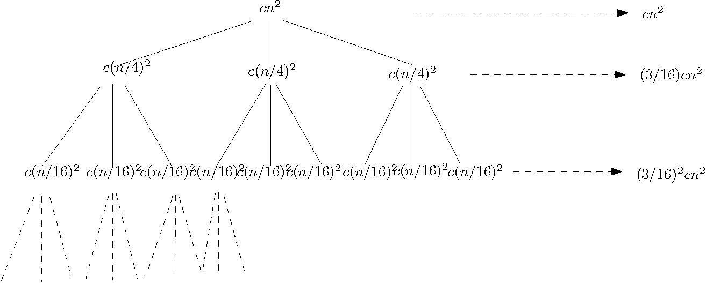
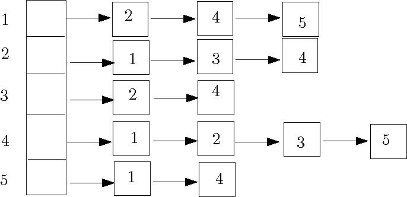

Today I first gave an introduction to this course.
At the beginning of this course, let us learn some basic stuff about algorithm analysis.
Before we analyze algorithms, let us learn how to describe an algorithm precisely. Instead of using "real" code, we use pseudocode to specify an algorithm. In a piece of pseudocode, we use the most clean and concise expressive method to describe a given algorithm. Sometimes, the pseudocode of an algorithm could even use an English sentence to describe a step of this algorithm. For example, if a complicated algorithm requires us to first sort the given input array, then we could write something like "sort the array A in ascending order using mergesort" as its first step. When writing pseudocode, we are not concerned with software engineering issues, such as data abstraction, modularity, and exception & error handling. Thus, pseudocode focuses on conveying the essence of an algorithm.
In this course, you are allowed to follow any convention of pseudocode that you prefer, as long as your pseudocode is readable and consistent. If you do not have any preference yourself, feel free to follow the way in which I write pseudocode, or the convention described in the textbook (Chapter 2).
Now, let's write down the pseudocode of insertion sort, which is a sorting algorithm taught in a previous course, before we analyze its running time.
INSERTION-SORT(A[1..N]) for j ← 2 to n key ← A[j]
i ← j - 1 while i > 0 and A[i] > key
A[i+1] ← A[i]
i ← i - 1
A[i+1] ← key
How to measure the running time of an algorithm? We may be tempted to use wall-clock time, but this is a bad measurement as it highly depends on the computer on which the algorithm is run. Hence, to analyze an algorithm, we need remove computer details such as processor speed, disk and memory, and one way of achieving this is to count the number of elementary operations only. The goal of algorithm analysis is to predict the resources required by an algorithm, and to do this, we need a machine model under which we express our algorithms, and some way of assigning costs of the operations under this model.
We analyze our algorithms under the random-access machine (RAM) model of computation. Algorithms are implimented as computer programs in a RAM.
A figure illustrating RAM:
In this machine model, there are unbounded number of local memory cells (words). An integer or a floating-point number can be stored in a memory cell. Program instructions are executed sequentially, i.e., one after another starting from the first to the last; there is no concurrency. The location counter indicates the instruction of the program that is currently being executed.
In this model, the time complexity (running time) is defined as the number of instructions executed, and the space complexity is the number of memory cells accessed.
The instruction set of RAM contains instructions commonly found in real computers, such as arithmetic operations (add, subtract, multiply, divide, remainder, floor, ceiling), data movement (load, store, copy) and control (conditional & unconditional branch). Each instruction uses 1 unit of time.
[Note: I didn't have time to talk about the following paragraph in Section 2 today, but I will talk about it in Section 2 on Friday] There are instructions in real computers that are not listed above. If your algorithm requires them, then make sure to make reasonable assumptions. For example, the exponentiation operation, i.e., computing x to the power of y, would require a numerical algorithm that is costly, and we would NOT assume that there is an instruction in the RAM that can perform this operation. On the other hand, when k is an integer <= the number of bits in a word, then 2k can be computed using a left shift. Thus we would assume that 2k is a constant-time operation.
[section 2 students need to finish reading the last paragraph of lecture 1 notes]
There are some limitations of the RAM, and more advanced models have been proposed to address these limitations. For example, to introduce concurrency to the RAM model, the PRAM model of computation was proposed. RAM does not consider memory hierarchy; to address this, models such as the external memory model were proposed. These are typically covered in graduate-level courses. To understand these models, a solid background of analyzing algorithms in the RAM is required. Furthermore, in many cases, algorithm analysis under RAM is sufficient. Thus, in this course, we mainly focus on RAM.
1. To analyze algorithms in RAM, we first need understand that the running time of an algorithm is expressed as a function of its input size. This is because the running time of an algorithm normally grows when the size of input grows. We choose reasonable parameters associated with the problem and use them as input size. For example, in sorting, the array size is the input size. In graph algorithms, we often choose the number of vertices and the number of edges as parameters.
2. The general steps of analyzing pseudocode are
3. To use this to analyze insertion sort, we first observe that each line of pseudocode can be implemented using a constant number of RAM instructions. Thus, we let ci be the cost of line i, which is a constant. Then, for each value of j in the outer loop, we let tj be the number of times that the while loop test in line 4 is executed. With these definitions, we have
INSERTION-SORT(A[1..N]) cost times 1 for j ← 2 to n c1 n 2 key ← A[j] c2 n-1
3 i ← j - 1 c3 n-1 4 while i > 0 and A[i] > key c4 ∑j=2,3,...,n tj
5 A[i+1] ← A[i] c5 ∑j=2,3,...,n (tj-1)
6 i ← i - 1 c6 ∑j=2,3,...,n (tj-1)
7 A[i+1] ← key c7 n-1
Now let's calculate the running time as a function of n:
")
This does not tell us much about the time complexity, as tj is not known and it depends on the actual input. The only thing that we can say about tj is that its value is between 1 and j (inclusive). To make sense of this function, let us see how the input affects the running time.
4. Best Case: In the best case, the input array A is already sorted, as this guarantees that tj is equal to 1. In this case,
T(n) = c1n + c2(n-1) + c3(n-1) + c4(n-1) + c7(n-1) = (c1 + c2 + c3 + c4 + c7) n - (c2 + c3 + c4 + c7)
This is a linear function of n, and thus we say the running time is Θ(n).
5. Worst Case: The case in which the input array A is reverse sorted is the worst case, as this guarantees that tj is equal to j. In this case,

This is a quadratic function of n, and thus we say the running time is Θ(n2).
6. Average Case: To perform the average-case analysis, we need assume that each of the n! permutations of A is equally likely. This is much more complicated, and if you are interested, you could read the following book (available in our library) to find out (not required):
The Art of Computer Programming, Volume 3: Sorting and Searching (2nd Edition), Donald E. Knuth.
If you intend to read this to enrich your knowledge, you could start by reading the discussions on inversions in the input array (5.1.1) and other properties of permutations in the same chapter, Before reading 5.2.1: Sorting by Insertion.
In this course, we mainly (though not always) concentrate on worst-case analysis. As pointed out by the textbook, there are many good reasons: Worst-case analysis gives an upper bound on the running time of the algorithm, guaranteeing the algorithm will not be more costly than the result of the analysis. In many practical applications, the worst-case happens very frequently. For example, when searching for records in a real database application, it is very often that the query would look for some key value that is not in the database. Finally, for many algorithms, the average-case running time is roughly as bad the their worst-case running time.
To appreciate the importance of good algorithm design, take the problem of sorting an array of SIN numbers for example. According to the data published by Statistics Canada, at the end of 2015, the population in Canada is roughly 34,880,000. We use this number as the value of n. Then, n2 is roughly 1015. Let's first throw away the constants in the analysis of insertion sort, and say this is the number of instructions required. If we use faster sorting algorithms whose cost is proportional to n lg n (in algorithms, lg n is log2 n), then for this input, lg n is roughly 25 and n lg n is roughly 109. If the CPU performs 1011 (100 billion) instructions per second, then insertion sort would require 104 seconds which are roughly 3 hours, while mergesort and heapsort would require 1/100 second. There is a big difference. In fact, the number of instructions of insertion sort should be a constant times n2, and if the constant is about 20, then it would require a long weekend. If you use mergesort/heapsort, then, even if the constant is 200, the sorting would be done in a matter of seconds.
Another thing to note is that, when presenting the result of analysis, we used Θ to throw away the constant factors. This is because we care about the order (rate) of the growth of the function that represents the running time, and we often care less about the coefficients. Asymptotic notation allows us to make more simplifying abstraction.
First, the definition:
Θ(g(n)) = {f(n): there exist positive constants c1, c2 and n0, s.t. 0 <= c1g(n) <= f(n) <= c2g(n) for all n >= n0}
Here we can say that g(n) is an asymptotically tight bound for f(n).
Observe that in the definition, Θ(g(n)) is defined as a set of functions. We however often abuse notation (acceptable here) and say f(n) = Θ(g(n)), and this means that f(n) ∈ Θ(g(n)). Sometimes this allows us to write shorter identities. For example, 20n2 + 13n + 1 = 20n2 + Θ(n) means 20n2 + 13n + 1 = 20n2 + f(n) and f(n) ∈ Θ(n)
Now, let's use the definition to prove that n2/2 + lg n = Θ(n2).
Proof. To prove this claim, we must determine positive constants c1, c2 and n0, s.t.
c1 n2<= n2/2 + lg n <= c2 n2
This is equivalent to c1 <= 1/2 + (lg n) / n2 <= c2
Setting c1 = 1/4, c2 = 3/4 and n0 = 2 would make this inequality hold (make sure that you do verify this).
There are also other choices of values of these constants that would guarantee the inequality, and in your proof, you just have to show the existence of one set, according to the definition.
Note that asymptotic notation applies to asymptotically positive functions only, which are functions whose values are positive for all sufficiently large n.
Definition: O(g(n)) = {f(n): there exist positive constants c and n0, s.t. 0 <= f(n) <= c g(n) for all n >= n0}
Following this definition, we can determine that n, n2, 3n2 + 4n + 5 are all O(n2), while n3 is not.
When we say that the running time of insertion sort is O(n2), we mean that the worst-case running time of insertion sort is O(n2). When we say that an algorithm runs in polynomial time, we mean that there exists a constant k, s.t. the worst-case running time of this algorithm is O(nk).
Definition: Ω(g(n)) = {f(n): there exist positive constants c and n0, s.t. 0 <= c g(n) <= f(n) for all n >= n0}
Based on the definitions, we have the following theorem: f(n) = Θ(g(n)) if and only if f(n) = O(g(n)) and f(n) = Ω(g(n)). For example, the statement n2/2 + lg n = Θ(n2) is equivalent to n2/2 + lg n = O(n2) and n2/2 + lg n = Ω(n2).
Some quick examples: n2, (lg n) n2, 4n2+5 are all in Ω(g(n)), while n is not.
Definition: o(g(n)) = {f(n): for any positive constant c, there exists a constant n0, s.t. 0 <= f(n) < c g(n) for all n >= n0}
This definition shows that f(n) grows more slowly than g(n).
Another definition of o-Notation is that f(n) = o(g(n)) if
lim f(n)/g(n) = 0
n→∞
By the definition of limits in calculus and the first definition of o-notation, we can see that these two definitions of little-oh are equivalent.
This second definition allows us to perform some quick analysis. For example, 2n = o(n2), but 2n2 ≠o(n2).
First, f(n) = ω(g(n)) if and only if g(n) = o(f(n)).
Formal definition: ω(g(n)) = {f(n): for any positive constant c, there exists a constant n0, s.t. 0 <= c g(n) < f(n) for all n >= n0}
Another definition using limits: f(n) = ω(g(n)) if
lim f(n)/g(n) = ∞
n→∞
Here I give some properties of order notation, which are not difficult to prove using definitions. Think about their correctness when reviewing these properties.
Here I give some tricks that are useful for comparing functions using order notation.
The first trick is that we can determine order notation by computing
lim f(n)/g(n) = c
n→∞
If the result, c, is 0, then f(n) = o(g(n)). If c = ∞, then f(n) = ω(g(n)). If 0 < c < ∞, then f(n) = Θ(g(n)), which also implies that both f(n) = O(g(n)) and f(n) = Ω(g(n)) hold.
Let us use this to prove the following claim: Let d be a nonnegative constant integer and a0, a1, ..., ad be constants, in which ad > 0. Let p(n) = Σc = 0, 1, ..., d (ai ni). Then p(n) = Θ(nd).
Proof. To prove this, we compute
limn → ∞ p(n)/nd = limn → ∞ (a0/nd + a1/nd-1 + ... + ad-1/n + ad) = ad.
Since ad is a positive constant, we claim that p(n) = Θ(nd). [end of proof]
8. Useful rules
There are some useful theorems for limits. Here I present them in a form based on the particular task of comparing two functions of complexity (running time, space, etc).
First, L'Hopital's rule:
lim (f(n)/g(n)) = lim (f'(n)/g'(n))
n→∞ n→∞
For example,
lim (ln n / n) = lim ((1/n) / 1) = 0
n→∞ n→∞
Thus ln n = o(n).
A more complicated example: Find out the relationship between f(n) = nn and g(n) = n!
Solution: By Stirling's approximation
we have

Therefore, f(n) = ω(g(n)).
Two other useful theorems:
1. If f(n) <= g(n) for all n > 0, then
lim f(n) <= lim g(n)
n→∞ n→∞
2. Squeeze Theorem: If h(n) <= f(n) <= g(n) for all n > 0, and
lim h(n) = lim g(n)
n→∞ n→∞
then
lim f(n) = lim g(n)
n→∞ n→∞
Using the squeeze theorem, we have an alternative, simpler approach that can prove n! = o(nn): Since
0 <= n! / nn = (1/n) (2/n) ... (n/n) <= 1/n
limn → ∞0 = limn → ∞(1/n) = 0
We have
limn → ∞(n! / nn) = 0
Finally, we can use the following property to break more complicated functions into simpler parts:
If f1 (n) = O(g1(n)) and f2 (n) = O(g2(n)), then
f1 (n) + f2 (n) = O(g1(n) + g2(n))
f1 (n) f2 (n) = O(g1(n) g2(n))
Let us use this property to show the relationship between (n3) (lg n)3 (lg lg n) and (n4) (lg n). First we have lg lg n = o(lg n). Thus, (lg n)3 (lg lg n) = o(lg4 n) = o(n). Therefore, n3 (lg n)3 (lg lg n) = n3 (o(lg4 n)) = o(n4) = o(n4 lg n).
I will now start talking about algorithm design. Before discussing each algorithm design paradigm, I will show different algorithmic solutions to the maximum subrange sum problem, to show good algorithm design is essential.
In this problem, the input is an array x of n possibly negative integers. The output of the algorithm for this problem is the maximum sum found in any subarray (possibly empty) of the input.
In the following example, n = 10 and the content of x is: 31, -41, 59, 26, -53, 58, 97, -93, -23, 84. The output is the sum of the subarray x[3..7], which is 187.
To understand this problem better, let us consider some special cases. First, if all the entries are positive, then the subarray with maximum sum is the entire array x. Second, if all the entries are negative, then the answer is 0, which corresponds to an empty subarray.
I described in class that this abstract problem is from practice.
In a brute-force solution to this problem we enumerate all possible subarrays, compute the sum of each of them and return the maximum.
In the pseudocode below, make sure to distinguish the letter l and the digit 1:
maxsubrangesum1(x[1..n])
max ← 0 for l ← 1 to n do for u ← l to n do
sum ← 0
for i ← l to u do sum ← sum + x[i] if sum > max then max ← sum return max
To analyze the running time, we need find out the number of times the statement in the innermost loop is executed. An upper bound would be n3. With this it is not difficult to show that the running time is O(n3). With greater care, we can show the running time is Θ(n3).
To improve the running time, we observe that in the previous solution, we perform a lot of recomputation in the innermost loop. For the example given before, to computer the sum of the subarray x[3..5], we do a loop to get the result 32. Then, in the next iteration, we compute the sum of x[3..6], again using a loop. We can however easily compute x[3..6] as x[3..5] + x[6].
We can formalize this observation using the following equation: sum of x[l..u] = sum of x[l..u-1] + x[u].
maxsubrangesum2(x[1..n])
max ← 0 for l ← 1 to n do sum ← 0 for u ← l to n do
sum ← sum + x[u] if sum > max then max ← sum return max
The running time is Θ(n2).
We describe another Θ(n2)-Time Solution, not because it is more efficient than solution 2, but because it makes use of a standard trick which is good to know.
In this solution, we first precompute the prefix sum array p[0..n], in which p[i] = x[1] + x[2] + ... + x[i], and p[0] = 0 (sum of the empty prefix). We can perform one loop to compute all the entries of p in O(n) time. With this, the sum of x[l..u] can be computed using x[l..u] = p[u] - p[l-1].
maxsubrangesum3(x[1..n]) p[0] ← 0 for i ← 1 to n do p[i] ← p[i-1] + x[i]
max ← 0 for l ← 1 to n do for u ← l to n do
sum ← p[u] - p[l-1] if sum > max then max ← sum return max
We learned divide-and-conquer when we learned mergesort in a previous course. Now let's apply this idea here.
Our algorithm breaks x into two halves. We can then find the maximum subrange sum in each half in recursive manner. After this, we still need consider subranges that straddle the midpoint. A useful observation is that among these ranges, the one with the maximum sum consists of a maximum-sum suffix of the left half of x, and a maximum-sum prefix of the right half of x. We can construct a proof by contradiction for this.
This gives us the following solution; note that we first need a recursive algorithm which solves this problem for array x[l..u].
maxsubrangesum4(x, l, u)
if l > u then
return 0
if l = u then
return max(0, x[l])
m ← ⌊(l+u)/2⌋ // midpoint
suml ← 0 // keep track of the sum of the suffixes of x[l..m]
maxleft ← 0
for i ← m downto l do
suml ← suml + x[i]
maxleft ← max(maxleft, suml)
sumr ← 0 // keep track of the sum of the prefixes of x[m..u]
maxlright ← 0
for i ← m+1 to u do
sumr ← sumr + x[i]
maxright ← max(maxright, sumr)
maxa ← maxsubrangesum4(x, l, m)
maxb ← maxsubrangesum4(x, m+1, u)
return max(maxa, maxb, maxleft+maxright)
To use this recursive algorithm to solve the maximum subrange sum problem, call
maxsubrangesum4(x, l, n)
Let T(n) be the running time. Then we can express T(n) using the following recurrence:
T(n) = T(⌈n/2⌉) + T(⌊n/2⌋) + n if n > 1
T(n) = 1 if n = 1
To solve it, we can assume n is a power of 2, which guarantees that the left and right half arrays are of the same size. This is a typical and reasonable assumption. Then, it is not difficult to see the running time satisfies T(n) = 1 if n = 1 and T(n) = 2 T(n/2) + n if n > 1. This recurrence is the same as the recurrence for the running time of mergesort, so the running time of our algorithm is also O(n lg n) (later we will learn how to analyze running time given recurrences).
Suppose that we have found the maximum subrange sum for x[1..j-1]. To find it for x[1..j], there are two cases.
In the first case, the subrange with the maximum sum lies entirely within x[1..j-1]. In this case, we already know the answer.
In the second case, this subrange ends at x[j]. This means, for this case, we have to find the maximum suffix sum of x[1..j]. If we already know the maximum suffix sum of x[1..j-1], we can add x[j] to that sum. If the result is positive, then it is the maximum suffix sum of x[1..j]. Otherwise, we take 0 as the maximum suffix sum of x[1..j], which corresponds to the empty suffix.
The above reasoning gives us a solution that is based on a linear scan of the array, keeping track of the maximum subrange sum and maximum suffix sum in the portion of the array seen so far.
masubrangesum5(x[1..n])
maxsofar ← 0 //keep track of the maximum subrange sum in the portion of the array seen so far maxsuffixsum ← 0 //keep track of the maximum suffix sum in the portion of the array seen so far
for i ← 1 to n do maxsuffixsum ← max(maxsuffixsum + x[i], 0)
maxsofar ← max(maxsofar, maxsuffixsum)
return maxsofar
This example requires only O(n) time.
From these five solutions, we can see that good algorithm design techniques are essential. The following are eight algorithm design paradigms
The first algorithm design paradigm that we will discuss is "reduce to known problem". This is to develop an algorithm for a problem by treating this problem as a special case of a problem that we already know how to solve efficiently. For most of the examples that we will see here, we reduce the problems to sorting, which we know how to solve in O(n lg n) time (e.g., mergesort, heapsort).
Let's apply this paradigm to solve some problems.
This problem asks us to determine whether the elements in a given array of n numbers are distinct.
Solution 1: A brute-force solution is to compare each element to every other element, and this solution requires a double loop. There are n choose 2 pairs of elements to compare. The running time is O(n2).
Solution 2: Sort the n numbers, and then we walk through the sorted array, comparing each element with the one immediately to its right. If we find any element that is equal to the element immediately to its right, then we have found a repeated element. If not, then the numbers are distinct. Since sorting requires O(n lg n) time and the computation after sorting requires O(n) time, this solution uses O(n lg n) time.
It is worth mentioning that the lower bound of the element distinctness problem is Ω(n) in the comparison-based model. What does this mean? To understand this, let's first learn what a comparison-based model is, and then what is the lower bound of a problem. Under the comparison-based model, algorithms can only perform arithmetic calculations and comparisons. They are forbidden to use the value of the input as addresses of memory cells. The above claim about lower bound means that any algorithm that solves this problem in the comparison-based model requires Ω(n lg n) time in the worst case. How to prove this is out of the scope of an introductory course to algorithms, but it is worth knowing the result.
Solution 4: This solution is for a special case in which we know that the input values are relatively small integers between 1 and M. In this case, we can make an array B[1..M], and initialize all its entries to 0. Then we scan x, writing a 1 in B[i] if we encounter i during the scan. Before writing, we check if B[i] has a 1 in it already, and if it does, then we have found a repeated element.
This requires O(M+n) time and O(M+n) space, and it is good if the numbers are small, e.g., M = O(n).
Exercise: how to modify our approach so that we need not initialize the entries of B to 0?
In this problem, we are given two sets of integers (represented as two arrays), and each set is of size n, and we compute the intersection of these two sets.
Solution 1: A naive approach is to loop through one array, checking to see if any of its elements is contained in the other. Again, this requires O(n2) time.
Solution 2: Sort the first array. Then we loop through the second array, and for each element in the second array, we find out whether it exists in the first array using binary search. This requires O(n lg n) time.
In this problem, we are given n points in the plane, and we are to find out whether there are three points that are collinear, i.e., lie along the same line.
Solution 1: For each triple of points, say P1 = (x1, y1), P2 = (x2, y2) and P3 = (x3, y3), compute the slopes of the line connection P1 with P2, and the line connecting P1 with P3. If they are equal, then these three points are collinear. We can easily write a loop of three levels to check each triple exactly once. There are n choose 3 triples, and this require Θ(n3) time.
Solution 2: For each point P, compute the slope of each line defined by P and another point in the given set of points. If there is a duplicate element among all these slopes, then there are collinear points. This way we have reduced the problem of finding whether there is a triple of collinear points involving P to the element distinctness problem. Thus this algorithm runs in O(n2 lg n) time.
Note that no one knows whether the problem of collinear points can be solved in O(n2) time, and thus our second solution is quite efficient.
In this problem, we have a set, Q, of points in the plane, given by the x- and y-coordinates of these points. We would like to compute the convex hull of this point set, i.e., the smallest convex polygon P for which each point in Q is either on the boundary of P or in its interior.
Since the points in Q could possibly lie along the boundary of P, it is not difficult to see that all the vertices of P are in Q.
One way of "computing" the convex hull is to bang nails into a board at the positions where the points are located, put an elastic rubber band around all the nails, and then let go. The law of physics will do the computation and define the convex hull using the rubber band.
This problem has many applications in computer graphics and CAD. Many programs compute the convex hull of a complicated shape, and use it to determine whether the user's mouse clicked on it.
To study the solutions to convex hull, let's first learn some background knowledge in geometry.
Polar angle: The polar angel of a point p with respect to the origin point p0 is the angle from the x-axis through the origin to the point p0, rotating counter clockwise.
In the above example, θ is the polar angle of p with respect to p0.
Compute the angle between two directed line segments: Let u and v be the vectors representing two directed line segments whose starting endpoints are the the origin point p0. How do we compute the angel, θ, between u and v?

We can use the following equation to compute θ: u⋅v = ||u|| ||v|| cos θ. Here the dot is the dot product of two vectors. Say, u = (x1, y1) and v = (x2, y2), then u⋅v = x1x2 + y1y2, and ||u|| is the length of u.
Note that we cannot assume arc cos or square root to be a constant-time operation supported by RAM. However, in many algorithms, we just have to compare two angles without computing their actual degrees. Thus, since this equation allows us to compute (cos θ)2 in constant time, we can make use of it to compare two angles in constant time.
Before introducing our algorithms for convex hull, let's make a simplifying assumption that no three points in the input point set are colinear. This is a common assumption; it is not difficult to modify our algorithms to handle the special cases in which there are colinear points (and yes, these special cases should be taken care of in actual implementation), and we make this assumption so that we can focus on explaining algorithmic ideas.
A naive approach is to consider the line joined by each pair of points, p1 and p2. Then, if all the other points are on the same side of this line, then the line segment between p1 and p2 is an edge of the convex hull.
How do we test if all the other points are on the same side of this line? One way of doing this is to first determine the equation of the line, say, Ax+By+C = 0. Then, substitute the coordinates of each of the other points into the left hand side. If the signs of the results are the same, then all the other points are on the same side.
It is not difficult to see the correctness of the algorithm, but the running time is O(n3). Can we do better?
5. Jarvis's March (Gift Wrapping): A better algorithm of computing convex hull is Jarvis' march. It is also called gift wrapping as its computational process is similar to the process of wrapping a gift: start from an extreme point and wrap it tightly using a piece of paper.
The algorithm is

If the convex hull has h vertices, then the running time of this algorithm is O(nh), since it uses O(n) time to "march" from one vertex of CH(Q) to the next and there are h vertices. This is O(n2) in the worst case.
6. Graham's Scan: During Jarvis's march, we repeatedly look for the smallest polar angles all the way, so can we just reduce the problem into sorting by polar angle? It is not as simple as this, since we keep changing origin points. The Graham's scan algorithm still manages to reduce it to sorting, in a subtle way. It has the following steps:

The pseudocode for Step 3 is
s ← an empty stack
PUSH(p0, S)
PUSH(p1, S)
PUSH(p2, S)
for i ← 3 to n-1 do
while the angle formed by points NEXT-TO-TOP(S), TOP(S), and pi makes a nonleft turn then
POP(S)
PUSH(pi, S)
return S
In the next lecture, I will talk more about this piece of pseudocode and then analyze the running time.
To analyze the running time of Graham's scan, it is easy to see that Step 1 requires O(n) time and Step 2 requires O(n lg n) time. Step 3 is not obvious. In Step 3, all the lines excluding the while loop requires O(n) time in total. To bound the cost of the while loop, it suffices to find out how many times the POP operation is executed. To find this out, observe that each point is visited at most twice in the pseudocode for Step 3: once when we add it to CH(Q) using PUSH, and possibly the second time when we discard it using POP. Thus the number of times that POP is executed is at most the number of points. Therefore, Step 3 requires O(n) time. The overall running time of Graham's scan is thus O(n lg n).
We learned divide-and-conquer in previous courses, and we will learn more about it in this course. The general steps of divide-and-conquer are
In this course, we have already seen an example: the 4th solution to the maximum subarray problem. Let T(n) be the running time of that algorithm. Then we can express T(n) using the following recursive formula:
T(n) = T(⌈n/2⌉) + T(⌊n/2⌋) + n if n > 1
T(n) = 1 if n = 1
To analyze the running time, assume, for simplicity, that n is a power of 2 (I will explain why this is a reasonable assumption). Then T(n) = 2T(n/2) + n if n > 1.
The first approach that I will use to solve the recurrence is called iteration. The idea is to plug the right-hand side of the equation repeatedly into the left-hand side.
Assume that n = 2k. Then we have
T(2k) = 2T(2k-1) + 2k
2T(2k-1) = 4T(2k-2) + 2k
...
2k-1T(2) = 2kT(1) + 2k
After summing all these equations, we have T(2k) = 2k + k 2k = 2k(k+1)
Therefore, T(n) = n(lg n + 1) = O(n lg n).
Now, let's discuss why it is OK, in the analysis of the running time of mergesort, to make the simplifying assumption that n is a power of 2. Even if n is not necessarily a power of 2, we still have the following equation:
T(n) = T(2lg n) <= T(2⌈lg n⌉) = 2⌈lg n⌉(⌈lg n⌉ + 1) < 2lg n + 1 (lg n + 1 + 1) = 2n (lg n + 2) = O(n lg n)
Therefore, in such recurrences, we normally ignore floor and ceiling when we solve them to compute the running time.
Next, let's using a different approach, namely the substitution method, to analyze running time. Study the following table
n 1 2 4 8 16 32
T(n) 1 4 12 32 80 192
T(n)/n 1 2 3 4 5 6
We can guess that T(n)/n = k + 1, where n = 2k.
Thus, our guess is T(2k) = (k+1)2k.
Now let's prove it by induction. Clearly it is true for k = 0. Assume it is true for k; we will prove it for k+1. We have
T(2k+1) = 2T(2k) + 2k+1 = 2(k+1)2k + 2k+1 = (k+2)2k+1
In this problem, we are given two n-bit numbers, and we are to compute the product of these two. Naturally, this makes sense if n is so large that these numbers do not fit in a word. Thus, an array of n entries are used to store the n bits in each of these numbers.
If we design an algorithm based on the pencil-and-paper method, it would require O(n2) time. Now let's see if we can make any improvement using divide-and-conquer.
Let X and Y be the two input n-bit numbers. Assume that the n bits representing X is the concatenation of A and B, and the n bits representing Y is the concatenation of C and D, where A, B, C and D are n/2-bit numbers. If we are to write down pseudocode, we can use arrays of 0/1 digits to represent X, Y, A, B, C and D.
Solution 1: This solution is based on the following equation:
XY = (A 2n/2 + B) (C 2n/2 + D) = (AC) 2n + (AD + BC) 2n/2 + BD
This immediately suggests the following idea of doing divide-and-conquer: First, perform four multiplications to compute AC, AD, BC, and BD. That is, solve 4 subproblems of size n/2. Then, use the solutions to these subproblems to compute XY; to do this, we simply perform additions and multiplications by 2n (or 2n/2), and these multiplications can be performed by appending 0 bits. Thus, we have the following recurrence on running times:
T(n) = 4T(n/2) + cn if n > 1, and T(n) = c if n = 1. c is a constant here.
We use the iteration approach again.
T(2k) = 4T(2k-1) + c 2k
4T(2k-1) = 16T(2k-2) + 4 c 2k-1
...
4k-1T(2) = 4kT(1) + 4k-1 c 2
When we sum up, we get T(2k) = c 4k + c (2k + 2k+1 + ... + 22k-1) = c 4k + c (4k - 2k)
Thus T(n) = (c + c) n2 - cn = O(n2).
Thus this solution does not achieve any improvement compared with the pencil-and-paper solution.
Solution 2: Karatsuba's algorithm
The second solution is based on the following equation
XY = (2n + 2n/2) AC + 2n/2 (A-B)(D-C) + (2n/2 + 1) BD
You can easily verify the correctness of this equation by expanding it.
If we design a divide-and-conquer approach based on this equation, we just have to solve 3 subproblems: the computation of AC, (A-B)(D-C) and BD. Thus the running time is
T(n) = 3T(n/2) + cn if n > 1
T(n) = c if n = 1
We can prove this by induction (left as an exercise): T(2k) <= c(3k+1 - 2k+1).
First I talked about the midterm exam.
Then, we have
T(n) <= c(3lg n + 1 - 2lg n +1) = c(3⋅3lg n - 2⋅2lg n) = c(3 nlg 3 - 2n) = O(nlg 3).
Since lg 3 = 1.58496...., we have T(n) = O(n1.59)
Some experimental studies showed that Karatsuba's algorithm outperforms the pencil-and-paper algorithm when n exceeds a certain threshold between 320 and 640. Thus it is good for very large integers, which are often used in math, stats, cryptography and astronomy.
So far we have learned a few methods to solve recurrences, including iteration and substitution. Now let's learn a general theorem that will cover many cases of recurrences.
Master theorem can be stated as follows:
Let a >=1 and b > 1 be constants. Let f(n) be a function. Let T(n) be defined on nonnegative integers by the recurrence T(n) = a T(n/b) + f(n), where we interpret n/b to mean either ⌊n/b⌋ or ⌈n/b⌉. Then
Memorize this. Note that there are gaps between different cases, so this theorem does not address all possible cases of recursion. Let's study some examples.
1) Karatsuba's algorithm: T(n) = 3T(n/2) + cn. For this a = 3, b = 2, f(n) = cn, and nlogba = nlg 3. Then if we choose some constant ε in (0, lg 3 - 1], we have f(n) = O(nlogba-ε) for all n. Hence case 1 applies and T(n) = Θ(nlg 3).
2) The divide-and-conquer solution to maximum subrange sum problem and Mergesort: T(n) = 2T(n/2) + n. It is easy to verify that case 2 applies, and T(n) = Θ(n lg n).
3) T(n) = 3T(n/2) + n2. Here f(n) = n2, and nlogba = nlg 3. It is easy to see that the first conditio of case 3 is satisfied. To verify that case 3 applies, we still have to verify the regularity condition. We have 3f(n/2) = 3(n/2)2 = (3/4)n2 <= cn2, for c = 3/4. Now we can claim that case 3 applies and T(n) = Θ(n2).
4) T(n) = 2T(n/2) + Θ(n). The solution would be the same as that to the solution to example 2). It is easy to see why by thinking about the definition of order notation.
The solution to T(n) = T(⌈n/2⌉) + T(⌊n/2⌋) + Θ(n) would also be the same, as indicated in the theorem, n/b can be interpreted as its floor/ceiling.
The solution to T(n) = 2T(n/2) + O(n) would be O(n lg n) instead of Θ(n lg n) (think about why).
5) T(n) = 2T(n/2) + n lg n. Here f(n) = n lg n, and nlogba = n. Since f(n) = Θ(nlogbalgk n) for k = 1, case 2 applies. Then T(n) = Θ(n lg2 n).
6) T(n) = 2T(n/2) + n / lg n. Here f(n) = n / lg n, and nlogba = n. Case 3 does not apply since f(n) grows more slowly than nlogba. Case 2 does not apply because f(n) = Θ(nlogbalgk b) for k = -1, but k cannot be negative in case 2. Could case 1 apply? Apparently it does, but in fact it does not. For any ε > 0, we have limn→∞ (f(n)/(nlogba+ε)) = limn→∞ (nε / lg n) = limn→∞ (ε ln 2 nε) = ∞.
Thus f(n) = ω(nlogba-ε) and case 1 cannot apply.
Therefore, master theorem does not apply to this recurrence.
How did people prove the master theorem? They did this with the help of recursion tree, which is another approach of solving recurrences.
In a recursion tree, each node represents the cost of a single subproblem somewhere in the set of recursive function invocation.
Here I will show how to make use of a recursion tree to make a good guess on the running time. Let's take the following recurrence for example:
T(n) = 3T(⌊n/4⌋) + c n2 if n > 1
T(n) = c if n = 1
For simplicity, assume that n is a power of 4. Previously, we showed why similar simplifying assumptions are reasonable. Then the recurrence becomes T(n) = 3T(n/4) + c n2.
By assigning cost to each node and summing up the costs of the nodes at each level, we have the following figure

We next compute the number, h, of the levels of this tree. The problem size of the root is n, and the problem size of a node at each successive level is 1/4 of that of a node at the level above, and at the leaf level (level h), the problem size is 1. Thus n (1/4)h-1 = 1, and we have h = log4 n + 1.
The number of leaves is thus 3h-1 = 3log4n = nlog43.
Summing up the cost of all levels, we have
T(n) = cn2 + (3/16)c n2 + (3/16)2c n2 + ... + (3/16)h-2c n2 + Θ(nlog43)
= Σi=0, 1, ..., h-2(3/16)ic n2 + Θ(nlog43)
<= Σi=0, 1, ..., ∞(3/16)ic n2 + Θ(nlog43)
....We will finish the summation in the next lecture.
Summing up the cost of all levels, we have
T(n) = cn2 + (3/16)c n2 + (3/16)2c n2 + ... + (3/16)h-2c n2 + Θ(nlog43)
= Σi=0, 1, ..., h-2(3/16)ic n2 + Θ(nlog43)
<= Σi=0, 1, ..., ∞(3/16)ic n2 + Θ(nlog43)
= (16/13)cn2 + Θ(nlog43)
= O(n2)
Students in Section 2: This was when we lost power.
We often make use of recursion tree to make a good guess, and then prove the guess using substitution method. For this example, we can easily prove by induction that T(n) <= 2cn2. In fact, we can even prove that T(n) <= (16/13)cn2.
In this problem, we look for the closest pair of points in a set, P, of n points.
The distance between two points (x1, y1) and (x2, y2) can be computed as d = √(x1-x2)2+(y1-y2)2. To compare the distance between one pair of points with the distance between another pair, we can compare the square of the distance to avoid the square root operation which cannot be performed in constant time. The brute-force approach will check all the pairs of points and thus will require Θ(n2) time.
To design a better solution, we use divide and conquer.
DIVIDE: We split P into two subsets PL and PR of approximately equal size. That is, |PL| = ⌈|P|/2⌉, and |PR| = ⌊|P|/2⌋. This can be done by sorting points by x-coordinate, and split P in two with a vertical line L through the median of the x-coordinates. Thus PL has points on or to the left of L, and PR has points on or to the right of R.
CONQUER: Find the closest pair of points in PL and PR recursively. Let δL and δR denote the distances between the closest pairs in PL and PR respectively. Let δ = min(δL, δR).
COMBINE: The closest pair is either the pair with distance δ found recursively during the CONQUER step, or a pair of points, pL (coordinates (x1, y1)) and pR (coordinates (x2, y2)), with pL in PL and pR in PR, whose distance is less than δ.
If the latter exists, we make the following observations:
From these observations, we have the following efficient process of finding pL and pR:
To analyze the running time, we have the following recurrence T(n) = 2T(n/2) + O(n lg n). The O(n lg n) is due to the sorting in both the divide (by x-coordinate) and the combine (by y-coordinate) steps. We solved this recurrence using the master theorem previously and found that T(n) = O(n lg2 n) time.
Speed-up: To avoid sorting for each recursive call, at the beginning of the algorithm, we sort all the points by x-coordinate and store them in an array X. We then sort all the points by y-coordinate and store them in an array Y. Then, with care, we will make use of these two arrays to avoid sorting in recursive calls.
The content of array X will not change during the recursive calls. In the divide step, we divide X[p..r] (the set P) into X[p..q] (the set PL) and X[q+1..r] (the set PR), where q = ⌊(p+r)/2⌋.
When dividing P into PL and PR, we split Y into YL and YR by performing a linear scan in P. For each point encountered during this scan, we check whether it is in PL or PR, and copy it to either YL or YR accordingly. We then use YL and YR as arguments for recursive calls.
In the combine step, to sort the points in the strip of width 2δ centered at L, we perform a linear scan in Y and extract these points.
The above strategy allows us to perform sorting by x-coordinate once and by y-coordinate once during the entire execution of the algorithm.
The running time now has two parts: the part for sorting at the beginning (O(n lg n) time), and the part for the recursive algorithm (T(n) time). We now have T(n) = 2T(n/2) + O(n), and thus T(n) = O(n lg n). The total running time is thus O(n lg n) + T(n) = O(n lg n).
The 4th algorithm design paradigm is to invent or augment a data structure. Data structures is one filed of algorithms, and we often use data structures as essential building blocks of algorithms. Previously we already saw one example of using data structures to design an algorithm. This is the maxsubrange3 algorithm, discussed in a previous lecture. In this algorithm, we created a prefix sum array p and used it to compute a subrange sum. Now let's see more examples.
In a string, an Abelian square is a substring of the form xx', where |x| = |x'| (|x| is the length of x), and x is a permutation of x'. For example, the English word reappear is an abelian square, in which x = reap and x' = pear, and so is the DNA fragment AACGTCAGAT.
The problem we consider is: Given string S[1..n], determine if it has an abelian square. For example, if S = preappearance, then the answer is true.
How do we determine whether x is a permutation of x'? One way of doing this is to sort both strings, and compare the sorted strings symbol by symbol. If the sorted strings are equal, then x is a permutation of x'.
How do we determine whether x is a permutation of x'? One way of doing this is to sort both strings, and compare the sorted strings symbol by symbol. If the sorted strings are equal, then x is a permutation of x'. Based on this, we have the following solution:
for len ← 1 to ⌊n/2⌋ do
for start ← 1 to n - 2 len + 1 do
x ← sort(S[start..start+len-1]
y ← sort(S[start+len..start+2len-1]
if x = y then
return true return false
The running time is O(n3lg n).
Can we do better? Let's think of a different way of determining whether x is a permutation of x'. If strings are defined over a finite alphabet Σ of k symbols, then we can tell whether x is a permutation of x' by counting the number of occurrences of each symbol in either string. If each symbol occurs the same number of times in both strings, then x is a permutation of x'. This means we need find a way to compute the number of occurrences of each symbol in any substring fast.
To do this, we augment the prefix sum array and define it as a 2D array p[1..k, 0..n], in which p[j, m] stores the number of occurrences of letter j in S[1..m]. We can compute p by a single scan of S from left to right in O(kn) time. This can be used to compute the number of occurrences of any letter in any substring in constant time.
Thus, x is a permutation of x' if and only if, for all 1<=j<=k, p[j, start+len-1] - p[j, start-1] = p[j, start+2len-1] - p[j, start+len-1].
Based on this, we have the following solution:
for j ← 1 to k do
p[j, 0] ← 0
for i ← 1 to n do
for j ← 1 to k do
if S[i] is the j-th letter of the alphabet then
p[j, i] ← p[j, i-1] + 1
else
p[j, i] ← p[j, i-1]
for len ← 1 to ⌊n/2⌋ do
for start ← 1 to n - 2 len + 1 do
j ← 1
while (j <= k) and (p[j, start+len-1] - p[j, start-1]
= p[j, start+2len-1] - p[j, start+len-1])
j ← j + 1
if j = k + 1
return true
return false
The running time of this solution is O(kn2). If k is not too large, this is much better than the previous solution.
Now let's invent a data structure to solve the following problem: We would like to maintain an array A[1..n] to support
Query a: Set A[i] ← A[i] + δ
Query b: Subrange sum (c, d): Computing A[c] + A[c+1] + ... + A[d]
If we simply store the data in the array A, then query a can be supported in O(1) time, but query b requires O(n) time. Alternatively, if we store the data in the prefix array p, then query b can be supported in O(1) time, but query a requires O(n) time. Now let's design a better data structure.
In this data structure, each node stores the sum of a subarray. Each leaf corresponds to a subarray of length 1, and the level above corresponds to subarrays of length 2, and so on. The following figure illustrates the data structure for n = 8:
To support query a, we simply update A[i] and all its ancestors, which uses O(lg n) time.
To compute the sum of A[c..d], we compute it as the difference between the sums of A[1..d] and A[1..c]. To compute the sum of A[1..d], first initialize a variable named sum to 0. We start from the root, and descend to the highest node whose range ends with d, and add its value to sum. During the top-down traversal, each time we choose the right child, we add the value of the left child (i.e., the left sibling of this child) to sum.
For example, using this algorithm, A[1..7] is computed as A[1..4] + A[5..6] + A[7]. A[1..6] is computed as A[1..4] + A[5..6]. A[1..3] is computed as A[1..2] + A[3].
As the height of this tree is O(lg n), query b can be answered in O(lg n) time.
Therefore, our data structure can support both queries in logarithmic time.
An exercise: how to store the tree as an array? Hint: think of heap.
The 5th algorithm design paradigm discussed in this course is greedy algorithms. They are used to solve optimization problems. For an optimization problem, there exist many solutions that satisfy the constraints given in the problem. Each solution has a value, and we would like to find a solution with the optimal (minimum or maximum) value.
The idea of greedy algorithms is to make the choice that looks the best at the moment. More formally, we make a locally optimal choice (i.e., a choice optimal for a subproblem) hoping that this will lead to globally optimal solution. The use of the word "hoping" here implies that a locally optimal choice will not always lead to a globally optimal solution, and thus to master greedy algorithms, we need learn to prove or disprove that a certain greedy strategy will yield an optimal solution.
In this problem, we are given a set of activities competing for time intervals on a given resource. Here n denotes the number of activities. Activity i has start time si and finish time fi. If selected activity i takes up the half open interval [si, fi).
The goal is to produce a schedule containing the maximum number of compatible activities. We say that activity i is compatible with activity j if either si >= fj or sj >= fi holds.
The following figure is an example that I gave in class, in which each interval corresponds to an activity. By choosing the activities circled in green, we get one optimal solution.
Let's first see some greedy strategies that do not work.
One greedy strategy is to select activity that starts earliest and is compatible with previous choices. To show that it does not always yield an optimal solution, we construct the following counterexample:
i si fi
1 0 10
2 2 3
3 4 5
4 2 8
5 7 9
The greedy algorithm will only schedule one activity: activity 1. However, it is easy to verify that activities 2, 3 and 5 are mutually compatible and the solution that selects these three activities is even better than the solution given by the greedy algorithm. Therefore, this greedy strategy does not always yield an optimal solution.
The following two greedy strategies will not always yield optimal solutions, either, and I asked you to come up with counterexamples as exercise:
Now let's come up with a strategy that would work. From the counterexample above, we can see that if an activity ends really late, then choosing it would prevent us from scheduling many activities. This gives us some idea.
The following greedy algorithm will compute an optimal solution:
I obtained the solution to the example in the figure using this strategy.
How to prove that this algorithm works? Let's look at a larger example and try to make some observations.
i si fi
1 1 4
2 3 5
3 0 6
4 5 7
5 3 9
6 5 9
7 6 10
8 8 11
9 8 12
10 2 14
11 12 16
The greedy algorithm will select activities 1, 4, 8, 11.
First, let's see some intuition about why the solution computed by the greedy algorithm is optimal. For the above example, let activities (a1, a2, ..., ak) be an optimal answer. If we replace a1 by activity 1, then (1, a2, ..., ak) is still an optimal solution, since activity 1 finishes no later than a1does, so a2, ..., ak are compatible with activity 1. We can continue and replace a2, ..., ak by 4, 8, 11 in the same fashion, and this way we have transformed the optimal answer to the answer given by the greedy algorithm, and they must both have the same number of activities.
Now let's formalize the above idea and come up with a correctness proof.
Proof. Let (a1, a2, ..., ak) be the answer given by the greedy algorithm, in which ai takes place before ai+1 for all 1 <= i <= k-1. Let (b1, b2, ..., bm) be an optimal answer, in which bi takes place before bi+1 for all 1 <= i <= m-1. We prove that k = m.
To prove this, we prove by induction on i that ai finishes no later than bi. This is sufficient because, with this claim, if k < m, then bk+1 starts after ak finishes, and is thus compatible with a1, a2, ..., ak. The greedy algorithm could have scheduled bk+1 after ak, since bk+1 finishes after ak does and is compatible with previously selected activities, but it didn't. This is a contradiction, so we cannot have k < m.
Now let's prove the above claim by induction. The base case holds since a1 ends no later than any other activity.
Assume that the claim holds for i, and we prove it for i+1. Let S be the set of activities compatible with (a1, a2, ..., ai), and S' be the set of activities compatible with (b1, b2, ..., bi). Then S contains all the activities whose starting time is greater than equal to the finish time of ai, and S' contains all the activities whose starting time is greater than equal to the finish time of bi. By the induction hypothesis, ai finishes no later than bi. Therefore, S' is a subset of S. Since bk+1 is in S', it is also in S. By the greedy strategy, ai+1 has the earliest finish time among activities in S, and thus it finishes no later than bi+1.
Pseudocode of the greedy algorithm:
Activity_Selection(s, f, n)
sort both s and f by f[i] in increasing order
A ← {1}
k ← 1
for i ← 2 to n do
if s[i] >= f[k] then
A ← A ∪ {i}
k ← i
return A
The time complexity is O(n lg n).
In the input, we have n items, and each item i has a weight wi (in kg) and a value vi (in dollar amount). We also have a knapsack, which has a maximum weight, W, that it can hold.
The problem is which items we should choose to maximize the value we can hold in our knapsack.
(Think of the example of the thief mentioned in class.)
The following is an example (the value/weight ratio is not given as input, but we can compute it easily):
W = 100, n = 6
item 1 2 3 4 5 6
value 80 70 85 40 75 65 weight 25 40 70 15 20 5 value/weight ratio 3.20 1.75 1.21 2.67 3.75 13
The following are four greedy strategies:
Unfortunately, none of these four strategies works. The above example can be used as a counterexample to show that these strategies do not work.
An optimal solution to the above sample input is to select items 1, 2, 5, and 6. The total weight would be 90, and the total value would be 290.
If greedy strategy 1 is used, then items 3, 1 and 6 are selected. The total weight is 100, and the value is 230.
If greedy strategy 2 is used, it happens that items 3, 1 and 6 are selected again, which is not an optimal solution.
If greedy strategy 3 is used, items 6, 4, 5 and 1 are selected. The total weight is 65, and the value is 260.
If greedy strategy 4 is used, items 6, 5, 1 and 4 are selected. Again, this is not optimal.
One variant of the knapsack problem can be solved using a greedy algorithm. In this variant, instead of having each item in the input representing a single physical item, each item represents a sack of some substance which can be arbitrarily divided. Examples: a sack of sugar, a sack of salt and a sack of gold dust.
Thus, we can take a fraction of an item and put it into our knapsack.
Under these assumptions, greedy strategy 4 works! Using this strategy, we first choose items 6, 5, 1, 4 and we can still put 35kg's items into our knapsack. The next item with the highest value to weight ratio is item 2, and its weight is 40 kg. Then we choose 35/40 (=7/8) of item 2, which is worth 7/8 * 70 = 61.25. With this choice, the total weight is 100, and the total value is 321.25.
The following is the pseudocode:
greedy(n, v, w, W)
sort both v and w by the ratio v[i]/w[i] in decreasing order free ← W sum ← 0 for i ← 1 to n do x ← min(w[i], free) sum ← sum + v[i] * (x/w[i]) free ← free - x return sum
Now let's give a correctness proof by contradiction. First we consider the case in which v[i]/w[i] are all distinct. Suppose the optimal solution S is better than our greedy solution G. Then S must agree for some number of items (perhaps 0) with G and then differ. Assume that the items have been ordered by v[i]/w[i] in decreasing order. Let item k be the first item of which S and G choose a different amount. Since G chooses the maximum amount of item k that can fit in the knapsack with the previously chosen items, then S must choose less amount of item k than G does. Say G chooses g kg of item k and S chooses s kg of item k. Then we can exchange (g-s) kg of later items that S chooses with (g-s) kg of item k. Doing so would only increase the total value of s, since later items have lower value/weight ratio. Therefore, S is not optimal, which is a contradiction.
For the more general case in which v[i]/w[i] are not necessarily distinct, we can group items of the same v[i]/w[i] ratio into the same group, and apply the reasoning above. It would be good exercise for you to work out all the details.
Egyptian fractions were developed in the Middle Kingdom of Egypt, almost 4000 years ago. It is an expression of the form 1/x1 + 1/x2 + ... + 1/xn, in which each xi is a distinct positive integer. Thus this expression is a sum of unit fractions. Some examples of expressing fractional numbers using Egyptian Fractions are:
5/6 = 1/2 + 1/3
47/72 = 1/2 + 1/9 + 1/24
Ancient Egyptians were concerned with unit fractions because these helped them to solve problems. For example, a farmer had to pay 72 farmhands with 47 sacks of grain. To distribute these evenly, he had to give each person 47/72 of a sack. Dividing 47 sacks into 72 shares each having 47/72 of a sack was too much work. The farmer however had a much better idea by making use of the equation above.
He first took out 36 sacks of grain and divided each sack in half. He gave each person 1/2 of a sack first.
Then there are 11 sacks left, and he took 8 sacks, and gave each person 1/9 of a sack.
Finally, he divided each of the remaining 3 sacks into 24 equal shares, and gave each person 1/24 of a sack.
By then, everyone had 1/2+1/9+1/24=47/72 of a sack, so the division was fair.
In 1202, Fibonacci came up with a greedy approach that can be used to express any rational number as the sum of unit fractions. The key idea is to make use of the following equation:
x/y = 1/⌈y/x⌉ + ((-y) mod x) / (y ⌈y/x⌉)
To verify the correctness of this equation, the following two identities are useful:
a mod n = a - n * ⌊a/n⌋
⌈x⌉ = -⌊-x⌋
Each time we apply this equation, we produce a unit fraction, and the numerator of the second term decreases. Therefore, this greedy algorithm will always terminate. If we use this algorithm to express 47/72, we have
47/72 = 1/2 + 1/7 + 1/101 + 1/50904
This example shows that the greedy expansion is not necessarily the shortest representation. It does not necessarily have the smallest denominator, either.
As an exercise, compute the greedy expansion of 31/311.
A related open problem is to prove or disprove the following claim: Every fraction of the form 4/n, in which n is an odd integer, has an Egyptian fraction representation with exactly 3 terms.
Dynamic programming was popularized by Richard Bellman, who started to describe it in 1940s. It typically applies to optimization problems. It typically reduces the complexity from exponential, e.g. 2n to polynomial, e.g. O(n3), O(n2) or O(n). This is achieved by avoiding the enumeration of all possibilities.
To introduce the matrix-chain multiplication problem, I first briefly reviewed how to multiply two matrices (see Appendix of CLRS). From this we see that to multiple two matrices of dimensions m by n and n by p, the number of scalar multiplications is m*p*n.
Now let's look at the multiplication of the following three matrices:
matrix dimension
M1 10 x 100 M2 100 x 5
M3 5 x 50
There are two ways of computing M1*M2*M3.
If we compute it as M1(M2M3), then the number of scalar multiplications is 100*5*50 + 10*100*50 = 75,000.
If we compute it as (M1M2)M3, then the number of scalar multiplications is 10*100*5 + 10*5*50 = 7,500.
The difference is a factor of 10!
This promotes us to think about the matrix-chain multiplication problem. In this problem, we are given A chain (M1, M2, ..., Mn) of n matrices, in which matrix Mi has dimension pi-1 * pi. The task is to fully parenthesize the product M1M2...Mn in a way that minimizes the number of scalar multiplications.
Solution1: Brute-force: We could use the brute-force approach. That is, we try all possibilities and take the minimum. Then the running time depends on the total number of different ways to multiply n matrices. Let W(n) denote this number.
To compute W(n), we make use of the observation that the last multiplication is either M1(M2...Mn), or (M1M2)(M3...Mn), or ..., or (M1M2...Mn-1)Mn.
From this observation, we can conclude that W(n) = 1 if n = 1, and W(n) = Σ1 <= k <= n-1W(k)W(n-k).
(Section 1 ended here)
Then we can prove by induction that
W(n) = (2n-2 choose n-1)/n
To see how big this value is, we make use of the fomula for bionmial coefficient (a choose b) = a! / (b! (a-b)!), and Stirling's approximation n! = nne-n√2πn(1+Θ(1/n)).
To see how big this value is, we make use of the fomula for bionmial coefficient (a choose b) = a! / (b! (a-b)!), and Stirling's approximation n! = nne-n√2πn(1+Θ(1/n)).
We then have (2n choose n) = (2n)! / (n!)2 ≈ (2n)2ne-2n√2π 2n / (n2ne-2n2πn) = 22n / √πn.
Applying the above equation, we have W(n) ≈ 4n/n3/2, which is exponential! When n = 20, this is roughly as large as 1010.
Dynamic Programming: We now use dynamic programming to avoid all the recomputation of the recursive approach to acheive a polynomial time solution.
We make use of the following observatoin: Suppose the optimal method to compute the product (M1M2...Mn) were to first compute the product of M1M2...Mk (in some order), then compute Mk+1Mk+2...Mn (in some order), and then multiply these two results together. Then the method used for the computation of M1M2...Mk MUST BE OPTIMAL, for otherwise, we could substitute a superior method to compute M1M2...Mk and improve the optimal method for the computation of M1M2...Mn. Similary, the method used to compute Mk+1Mk+2...Mn must also be optimal. What is left is to find the value of k, and there are n-1 choices.
Based on this, we further develop the idea for our algorithm. Let m[i, j] be the optimal cost for computing MiMi+1...Mj. Then we have
/ 0 if i = j
m[i,j] = |
\ min i<=k<j m[i,k]+m[k+1,j]+p[i-1]p[k]p[j] otherwise
We can eailsy translate this into a recursive algorithm. However, before I write down its pseudocode, I would emphesize that this algorithm is BAD! It is BAD! Very BAD! No one should ever use such an algorithm. It is however a common mistake, so we need know about it in order to avoid coming up with a similar solution.
Recursive_Multi(i, j)
if i = j then
return 0
else
minc ← ∞
for k ← i to j-1 do
a ← Recursive_Multi(i, k)
b ← Recursive_Multi(k+1, j)
minc ← min(minc, a+b+p[i-1]*p[k]*p[j])
return minc
This algorithm is bad because it essentially checks all possibilities. It is as bad as brute-force. It requires exponential time!
To use dynamic programming correctly, we fix an order in which we compute m[i, j]. Here we first compute m[i, i] for all i. Then we compute m[i, i+1] for all i. Then m[i, i+2] for all i, and so on. That is, we compute answers to smaller subproblems first.
Matrix_Multi_Order(p, n)
for i ← 1 to n do
m[i,i] ← 0
for d ← 1 to n-1 do
for i ← 1 to n-d do j ← i + d m[i,j] ← ∞ for k ← i to j-1 do q ← m[i,k] + m[k+1,j] + p[i-1]*p[k]*p[j] if q < m[i,j] then m[i,j] ← q s[i,j] ← k return (m, s)
From the above code we can see why we compute m[i, j] in the order specified above. This is to guarantee that the values of m[i,k] and m[k+1,j] are available when we compute m[i,j].
The running time is O(n3), and the optimal cost of multiplying these matrices is stored in m[1, n].
To fully understand the order in which the dynamic programming algorithm computes m[i, j], I used the example on pp. 380 (or pp.376 in the 3rd edition) in CLRS. When you review it, think about how entry m[1,4] is calculated.
Our previous algorithm computes the optimal cost of multiplying the given matrix chain. How do we multiply the matrices optimally? This can be done using recursion.
Say, we wish to multiply MiMi+1...Mj optimally, if we know k, then we can compute MiMi+1...Mk and Mk+1Mk+2...Mj recursively, and then multiply the products together. How can we find out k? We can simply retrieve its value from s[i, j]. Thus, we can use the following algorithm to multiply matrices optimally after we compute the array s using the previous dynamic programming algorithm:
Matrix_Mult(M, s, i, j)
if j > i then X ← Matrix_Mult(M, s, i, s[i,j]) Y ← Matrix_Mult(M, s, s[i,j]+1, j) return X*Y else return Mi
We claim that the running time is O(n) + the time to do the actual n-1 matrix multiplications. The latter depends on the size of the matrices. To see that the additional cost (other than the actual matrix multiplication cost) is indeed O(n), we observe that O(n) calls are made and each call uses O(1) time.
Another way of writing down a dynamic programming algorithm is to use memoization. In our solution, the idea is to compute m[1, n] recursively. Each time we compute m[i, j], we check if it has already been computed. If it has, then we retrieve its value. Otherwise, we compute it recursively.
How do we find out if an entry of m has been computed? For this we simply fill all the entries of m using infinity in the beginning.
Memoized_Matrix_Multi(p, n)
for i ← 1 to n do for j ← 1 to n do m[i,j] ← ∞ return Lookup(p, 1, n) Lookup(p, i, j) 1 if m[i,j] < ∞ then 2 return m[i,j] 3 if i = j then 4 m[i,j] ← 0
5 else 6 for k ← i to j-1 do 7 q ← Lookup(p, i, k) + Lookup(p, k+1, j) + p[i-1]*p[k]*p[j] 8 if q < m[i,j] then 9 m[i,j] ← q 10 s[i,j] ← k 11 return m[i,j]
To analyze the running time, the crucial part is to analyze the running time for computing Lookup[p, 1, n]. There are two types of calls to Lookup: type-1 call in which line 2 is executed, and type-2 call in which lines 3-11 are executed.
To analyze the running time, the crucial part is to analyze the running time for computing Lookup[p, 1, n]. There are two types of calls to Lookup: type-1 call in which line 2 is executed, and type-2 call in which lines 3-11 are executed.
Each type-2 call corresponds to an infinity in a different entry of m, and thus the number of type-2 calls is O(n2). Since lines 3-10 require O(n) time each time they are executed, the total number of cost for lines 3-10 throughout the execution of the algorithm is O(n2*n) = O(n3).
Type-1 calls are made as recursive calls by type-2 calls. Since there are O(n2) type-2 calls and each of them makes at most n type-1 calls, the total number of type-1 calls is O(n3). This means that line 2 is executed O(n3) times and this uses O(n3) time in total.
The number of times line 1 is executed is equal to the total number of calls to Lookup, which is O(n3). This uses O(n3) time.
Therefore, the total running time is O(n3).
In this problem, we are given two strings: x[1..m] and y[1..n], and out task is to find the longest sequence that appears (not necessarily consecutively) in both strings.
For example, if x = algorithm and y = exploration, then their LCS (longest common subsequence) is lort.
Why do we study this problem? The length of the LCS between two strings is often used as a measurement of their similarity. Thus this has applications in text mining and bioinformatics.
If we solve this problem using a brute-force approach, that is, we enumerate all possible subsequences of x and y and then compute their intersection, the running time would be exponential. The total number of subsequences of x alone is already 2m.
Fortunately, we can use dynamic programming to design a polynomial-time solution.
The first step of using dynamic programming to solve LCS is to make an observation to come up with a recursion for the length of the longest common subsequence of x and y.
For this, we look at the last character of either string. There are three cases.
The next step is to come up with a recursive formula.
Let c[i, j] be the length of the LCS of these two prefixes: x[1..i] and y[1..j]. Then, based on the above observation, we have
/ 0 if i = 0 or j = 0
c[i,j] = | c[i-1,j-1] + 1 if x[i] = y[j]
\ max(c[i-1,j], c[i,j-1]) if x[i] ≠ y[j]
Then we can use the following algorithm to compute all the entries of c, and return the length of LCS of x and y.
LCS_Length(x[1..m], y[1..n])
for i ← 1 to m do
c[i,0] ← 0
for j ← 1 to n do c[0,j] ← 0 for i ← 1 to m do for j ← 1 to n do if x[i] = y[j] then c[i,j] ← c[i-1, j-1] + 1 else c[i,j] ← max(c[i-1,j], c[i,j-1]) return c[m,n]
In the above algorithm, after filling in the entries for the base case, we compute other entries in increasing order of i. For each i, we compute in increasing order of j. This is important as this order guarantees that the entries of c needed to compute c[i,j] have been computed by the time we look at c[i,j].
As an exercise, I asked you to fill in a 9x 11 table whose entries record the length of LCS between any pairs of prefixes of strings algorithm (string x) and exploration (string y). More precisely, the entry at the ith row and the jth column records the length of LCS between prefix x[1..i] and prefix y[1..j].
To compute the LCS itself, the approach in CLRS stores some extra information (the array b on page 394) and then makes use of it to compute LCS recursively. Here we will use a more space-efficient approach which does not require additional data structures. Assume that the array c has already been computed using our dynamic programming algorithm. Then, we can deduce the LCS of x and y from the content of c as follows:
LCS(i, j) // A recursive algorithm that computes the LCS of x[1..i] and y[1..j]
if i = 0 or j = 0 then
return empty string
else if c[i,j] > max(c[i-1,j], c[i,j-1]) then
return (LCS(i-1,j-1), x[i])
else if c[i-1,j] >= c[i,j-1] then
return LCS(i-1,j)
else
return LCS(i,j-1)
To see the running time of LCS(m, n), observe that each call decreases the values of i, j, or both by 1. Therefore, the number of calls is at most the sum of the initial values of i and j, which is m+n. The work in each call costs constant time, so that total running time is O(m+n).
An exercise is to ask you to use this algorithm to compute the LCS between x = algorithm and y = exploration.
In this problem, we are given an amount in cents. We are to make change using a system of denominations, using the smallest number of coins possible to make change.
Canadian Coinage System (including pennies) and Greedy Algorithms. Let's first consider the Canadian coinage system, in which we have toonies, loonies, quarters, dimes, nickels and pennies. We actually "had" pennies up to 2012; here we still include pennies as we are studying the problem of making exact change.
We can model this problem mathematically as follows: We are given an integer n, where 0 <= n < 500, and our goal is to express n = 200a + 100b+ 25c + 10d + 5e + f, where a, b, c, d, e, f are integers >= 0, s.t. a+b+c+d+e+f is minimized.
How do most cashiers make change? They use the following greedy algorithm: Choose as many toonies as possible (s.t. 200a <= n); then for n-200a, choose as many loonies as possible, etc. For example, if the amount of change is $4.87, then a=2, b=0, c=3, d=1, e=0, f=2. In total, 8 coins are used.
This greedy algorithm always computes an optimal solution for the Canadian coinage system. But, this is not necessarily true for any arbitrary coinage system.
For example, if the face values of coins are 12, 5, 1, and the amount of change is 15, then the greedy algorithm will express 15 as 1*12+0*5+3*1, and 4 coins will be used. However, we can use 3 coins to make change, as 15 = 3*5.
How to tell, for a given coinage, whether the greedy algorithm always gives an optimal solution? If you are interested, you can read the following optimal reading material to find out:
A polynomial time algorithm for the change-making problem, Operations Research Letters, 33 (3) 2005, 231-234. http://www.sciencedirect.com/science/article/pii/S0167637704000823
Another question is, can we design an algorithm that will always compute an optimal solution for any given coinage system? We can indeed design such an algorithm using dynamic programming.
Dynamic Programming. To use dynamic programming for the problem of making change, we assume in the input we have the amount (in cents) n > 0, and an array d[1..k] storing the denominations of the k coins, in which d[1] = 1 (so that we can always make the exact change) and d[i] < d[i+1] for all i.
We make the following observation: The optimal method must use some denomination d[i]. If we know which d[i] is used, then we can claim that the optimal solution can be computed by first computing the optimal solution for n-d[i], and then adding one coin of denomination d[i]. We do not know which coin is to be used, so we try all d[i] s.t. d[i] <= n.
This gives us the following recursion, in which opt[j] stores the optimal number of coins to make change for j cents.
/ 1, if j = d[i] for some i
opt[j] = | \ 1 + min(opt[j-d[i]), where the min is over all i, s.t. d[i] < j, otherwise.
We can then write an algorithm to compute opt[j] for j = 1, 2, ..., n.
Coins(n, d[1..k])
for j ← 1 to n do opt[j] ← ∞ for i ← k downto 1 do if d[i] = j then opt[j] ← 1 largest[j] ← d[i] else if d[i] < j then a ← 1 + opt[j-d[i]] if a < opt[j] then opt[j] ← a largest[j] ← d[i] return opt[n]
The running time is O(kn).
Let's look at an example. In this example, d = {1, 4, 5} and n = 8. Then, the greedy algorithm would express 8 as 5+1+1+1, and uses 4 coins. If we use dynamic programming, we will compute the entries of opt and largest as follows:
j opt[j] largest[j]
1 1 1 2 2 1 3 3 1 4 1 4 5 1 5 6 2 5 7 3 5 8 2 4
For example, the entry opt[8] is computed as 1 + the minimum of opt[8-5], opt[8-4] and opt[8-1].
How to get the coins used in the optimal solution? Let's look at the above example again. In this example, 8 has a representation of size 2 (=opt[8]), with largest coin 4 (=largest[8]). Then, 8-4=4 has a representation of size 1 (=opt[4]), with largest coin 4 (=largest[4]). From this we can tell that the optimal solution expresses 8 as 4+4.
Based on the above process, we can design an algorithm that will compute the set of coins used in the optimal solution, assuming that the array largest has already been computed using dynamic programming.
Make_Change(n, largest)
C ← Φ // a multiset that stores the answer while n > 0 do C ← C ∪ largest[n] n ← n - largest[n] return C
This is the 7th algorithm design paradigm that we study in this course.
Many problems have some sort of structure (algebraic, number-theoretic, topological, geometric, etc.) that suggests a solution, so we design algorithms accordingly to make use of such structure.
As an example, we consider the greatest common divisor problem: Given nonnegative integers u and v, compute their greatest common divisor, gcd(u, v).
First, let us learn a few definitions. d | u means d is a divisor of u. We say d divides u. This means that there exists an integer k, s.t., u = kd. We say that d is a common divisor of u and v if d | u and d | v. We say that d is the largest common divisor of u and v if d is a common divisor of u and v, and no other common divisor is larger. For example, gcd(24, 18) = 6.
Section 1 stopped here.
This is useful in algebra. For example, when we reduce a fraction to lowest term, we need the greatest common divisor of the numerator and denominator. Math software would need an algorithm for this problem.
We probably programmed a simple solution to this problem when we learned our first programming language The brute-force approach is to let t = min(u, v), and try numbers t, t-1, t-2, .... The running time is O(min(u, v)). Is this linear time?
We probably programmed a simple solution to this problem when we learned our first programming language The brute-force approach is to let t = min(u, v), and try numbers t, t-1, t-2, .... The running time is O(min(u, v)). Is this linear time?
Surprisingly, the answer is no. Recall that when we first started to study running time, we learned that we would study the running time as a function of input size. When determining the size of input for a problem, we use something reasonable. Here, we have two integers, u and v. A reasonable measurement is to use the number of bits required to encode these two integers in binary, which is roughly lg u + lg v (we ignore floor/ceiling here for simplicity). Thus, if the values of u and v are close to each other, then the input size is roughly 2 lg u, and the running time O(u) would be approximately O(2(input size)/2). This is exponential!
In cryptography, we often deal with integers that is represented in 128, 256, 512, ... bits. Then, if an algorithm requires 2256 steps, it would take forever.
To come up with a better solution, let's make some observations. We develop the following simple idea: If d | u and d | v, then d | (au + bv) for all integers a and b. We then choose a and b to minimize au+bv. One way of doing this is to choose a = 1 and b = -⌊u/v⌋ and then au+bv = u - v⌊u/v⌋ = u mod v.
We can prove that d | u & d | v if and only if d | v and d | (u mod v) using the equation u mod v = u - v⌊u/v⌋.
Euclid's algorithm is based on the above structure. It was discovered in 300 B.C.! The pseudocode is simple:
Euclid(u, v)
while (v ≠ 0) do (u, v) ← (v, u mod v) return u
Finck analyzed this algorithm in 1841. He proved the following theorem: Euclid's algorithm uses O(lg v) steps on input (u, v), where u > v > 0.
Proof. Consider replacing (u, v) by (u, r), where r = u mod v. There are three cases.
Case I: v > u/2. Then r = u - v < u/2.
Case II: v = u/2. Then r = 0;
Case III: v < u/2. Then r < v < u/2.
Hence r < u/2.
It follows that after two steps, say (u, v) ← (v, r) ← (r, s), we have s < v/2, and r < u/2. Therefore, after two steps, v decreases by a factor of 2. After O(lg v) steps, v will decrease to 0. This completes the proof.
With greater care, we can prove that the number of steps <= 2 lg v + 1.
This means that the running time of Euclid's algorithm is linear.
Can we do better? There is an algorithm called binary algorithm that avoids using integer division, and uses subtraction and shifts instead. Its running time does not beat that of Euclid's algorithm asymptotically. It however often uses less time in practice as subtraction/shift are faster than division. It was proposed by J. Stein in 1967, though an approach used in the 1st century of China is essentially equivalent. Here we use Stein's modern description.
This algorithm is based on the following recurrence, in which u >= v:
/ u, if v = 0
| 2 * gcd(u/2, v/2), if u and v are both even
gcd(u, v) = | gcd(u, v/2), if u is odd and v is even
| gcd(u/2, v), if u is even and v is odd
\ gcd((u-v)/2, v), if and v are both odd
This gives us the following pseudocode:
GCD(u, v)
if u < v then
return GCD(v, u)
if v = 0 then
return u
if u and v are both even then
return 2*GCD(u/2, v/2)
if u is odd and v is even then
return GCD(u, v/2)
if u is even and v is odd then
return GCD(u/2, v)
return GCD((u-v)/2, v)
To see the running time, we first analyze the total number of subtractions, s(u, v). We prove that s(u, v) <= lg(u+v).
Proof: We prove by induction on u+v.
In the base case, u+v = 1. Then either u = 1, v = 0, or u = 0, v = 1. In either case, s(u, v) = 0 and the claim holds.
Now assume the claim holds for u+v < n; we prove it for u + v = n. There are five cases.
If v = 0 or u = 0, s(u, v) = 0 and the claim holds.
If u and v are both even, then s(u, v) = s(u/2, v/2) <= lg(u/2 + v/2) = lg(u+v) - 1 <= lg(u+v).
If u is even and v is odd, then s(u, v) = s(u/2, v) <= lg(u/2 + v) <= lg(u+v).
The case in which u is odd and v is even is similar to the case above.
If u and v are both odd, then s(u, v) = s((u-v)/2, v) + 1 <= lg((u-v)/2 + v) + 1 = lg((u+v)/2) + 1 = lg(u+v).
This completes the proof.
The total number of right shifts is less than or equal to the total umber of bits in both numbers, which is lg u + lg v.
With the above reasonings, we can easily show that the total running time O(max(lg u, lg v)).
The 8th algorithm design paradigm is probabilistic & randomized techniques. To learn this, we first clear some concepts.
In probabilistic analysis, we use knowledge of, or make assumptions about the distribution of input. In probabilistic analysis, we use knowledge of, or make assumptions about the distribution of input. We then average the running time over the distribution of possible inputs and get the average-case running time. One classic example is quicksort. In a previous course, we assumed that the input distribution is uniform, i.e., all input permutations are equally likely, and found out that the average-case running time is O(n lg n). Some of you might have also learned interpolation search, whose average-case running time is O(lg lg n).
Another concept is randomized algorithms. The behavior of randomized algorithms is determined by input and by values produced by a random-number generator. Here "random" means "truly random". That is, each time we ask for a random integer between 1 and n, we get each integer equally likely. The expected running time of a randomized algorithm is the expectation of the running time over the distribution of values returned by the random number generator. Note: NOT over the distribution of input.
Previously we have only learned deterministic algorithms which do not use random number generators. We have also seen how to perform probabilistic analysis, so in this lecture, we will focus on randomized algorithms only.
In this problem, we are given an array A[1..n] of integers, in which one integer (the majority element) occurs more than n/2 times, and our tasks is to find this element. This problem has applications in data mining.
There indeed exists a deterministic algorithm that can solve this problem in O(n) time. This is the Boyer-Moore's voting algorithm. It is a subtle algorithm. Dr. Gagie taught it in class. Usually I gave the following link to students and asked them to read it if interested to learn this algorithm:
http://www.cs.utexas.edu/~moore/best-ideas/mjrty/
It was good that Travis taught it in class; this made it easier to understand. To be consistent with previous terms, I will not require that you understand this algorithm for assignments or exams, but it is good to know it. In the next lecture, the guest lecturers will show a simple randomized algorithm.
The following is a simple randomized algorithm for this problem:
Find_Majority(A[1..n])
while true do i ← RANDOM(1, n) Get the number, j, of occurrences of A[i] in A[1..n] if j > n/2 then return A[i]
To get the expected running time, we first observe that since there is a majority element, the probability of finding it in one try (i.e. one iteration of the while loop) is > 1/2. Thus, the expected number of tries to find it is < 2 (why? we will prove this). Each try uses O(n) time, and thus the expected running time is O(n).
To analyze the expected number of tries, let's first brush up some knowledge in probability theory. The expectation of a random variable X that can take any of the values in a set S is Σv in SPr(v) * v. For example, when we toss a die, if the die is fair, the the expected value of the die is 1*(1/6) + 2*(1/6) + ... + 6*(1/6) = 3.5.
Now let's analyze the expected number of tries. In each try, we guess an index of the array, and we find the majority with probability p > 1/2. (Here p is equal to the number of occurrences of the majority divided by n.) Let x be the expected number of tries. Then x = p*1 + (1-p)*p*2 + (1-p)2*p*3 + ... = Σi>=1(1-p)i-1*p*i.
Let y = Σi>=1(1-p)i*p. Then y= (1-p)p/(1-(1-p)) = 1-p.
We have x*(1-p) + y = Σi>=1(1-p)i*p*i + Σi>=1(1-p)i*p = Σi>=1(1-p)i*p*(i+1) = x - p.
Plugging in the value of y, we have x*(1-p) + (1-p) = x - p. Solving this equation, we have x = 1/p. This is indeed less than 2.
So far we have shown that the above randomized algorithm uses O(n) expected time, which is efficient. There are however some issues with this solution. First, this solution is not robust: If there is no majority element, then it will loop forever. For some applications, this issue can be resolved in the following way: Terminate the while loop if it has been iterated k times for a certain value k. If no majority element has been found yet, then we can claim that, if there is indeed a majority element, then the probabilities of our algorithm not finding it is less than 1/(2k). This is acceptable in many applications in data mining, but may not always be acceptable. Another issue is that it may take a long time, though this is rare.
Despite these issues, randomized algorithms are often the most practical solutions. For example, if you learn more about computational geometry in the future, you will learn a randomized solution to the point location problem, which is the most practical one.
In the selection problem, we are given an array A[1..n] and an integer i with 1 <= i <= n, and our task is to determine the i-th smallest number in A.
When i = 1, n, or ⌈n/2⌉, the problem becomes the problem of finding min, max, or median.
One obvious approach is to sort the array and take the i-th element in the sorted array. This would require O(n lg n) time. Can we do better?
Now, let's study the following randomized algorithm for selection. It consists of two parts. First, a randomized algorithm that partitions the array A[l..u] into two parts (note that this is character l, not digit 1).
Randomized_Partition(A, l, u)
i) Choose a random index i' from [l..u]. Assign v ← A[i'].
ii) Rearrange the elements of A[l..u] so that there exists an integer p s.t.
elements in A[l..p-1] are <= v,
A[p] = v (i.e. v is moved from A[i'] to A[p]), and
elements in A[p+1..u] are >= v.
iii) return p
This is similar to the partition step for quicksort, though in the basic version of quicksort, we do not choose a random element to partition the array. Instead, we choose, say, the last element. Similar to the partition step in quicksort, this can be performed in time linear in the length of the subarray A[l..u].
With this, we can introduce the randomized selection algorithm.
Randomized_Select(A, l, u, i) // find the ith smallest element from A[l..u]
if l = r then
return A[l]
p ← Randomized_Partition(A, l, u)
k ← p - l + 1 // note that a[p] is the k-th smallest element in A[l..u]
if k = i then
return A[p]
else if i < k then
return Randomized_Select(A, l, p-1, i)
else
return Randomized_Select(A, p+1, u, i-k)
To analyze the expected running time T(n), we observe that Randomized_Select calls itself on either an array of size k-1, or an array of size n-k. In the worst case, we fall in the larger of these two partitions. Thus we have
T(n) <= ((1/n) * Σk=1,2,...,nT(max(k-1, n-k))) + an, for some constant a.
Section 2 ended here
We prove that T(n) <= cn for some constant c by induction on n.
Assume it is true for some base case. We will figure out what the base case should be later.
Assume it is true for n' < n; we now prove it for n. We have
T(n) <= ((1/n) * Σk=1,2,...,nT(max(k-1, n-k))) + an
<= ((2/n)* Σk=⌊n/2⌋,⌊n/2⌋+1,...,nT(k)) + an
<= (2/n)* Σk=⌊n/2⌋,⌊n/2⌋+1,...,nck + an
= (2c/n)* Σk=⌊n/2⌋,⌊n/2⌋+1,...,nk + an
= (2c/n)* ( Σk=1,2,...,nk - Σk=1,2,...,⌊n/2⌋-1k) + an
= (2c/n)*(n(n-1)/2 - ⌊n/2⌋(⌊n/2⌋-1)/2) + an
<= (2c/n)*(n(n-1)/2 - (n/2-1)(n/2-2)/2) + an
= (c/n)((3/4)n2 + (1/2)n - 2) + an
<= 3cn/4 + c/2 + an
We need choose c s.t. 3cn/4 + c/2 + an <= cn
Simplifying, we have T(n) <= cn provided n >= 2c/(c-4a).
Choose c >= 12a. Then 2c/(c-4a) = 2/(1-4a/c) <= 3.
Thus, T(n) <= cn provided n >= 3.
To make the base case work, we need ensure that T(n) <= cn for n = 1, 2. This can be done by choosing c = max(12a, T(1), T(2)/2).
This completes the proof.
Thus, the randomized selection algorithm uses expected linear time.
Is there a deterministic algorithm for selection that uses linear worst-case time? Yes. If you are interested, you can read the following optional reading material: Section 9.3 in CLRS. The determinist linear-time algorithm is interesting but fairly complicated. The randomized algorithm above is better in practice.
In previous lectures, we learned 8 algorithm design paradigms, which gives us a rich toolset for problem solving. Now we use some of these paradigms to solve problems in graphs.
We learned graphs in CSCI 2110 before, and also in discrete math. I will first review some definitions and graph representations briefly; you have seen most of these in 2110. Then I will focus on the problems that can be solved using paradigms learned in this course.
As we learned before, a graph is a discrete structure. It is an abstract representation of a set of objects where some pairs of objects are connected by links. We call each object a vertex or node, and each link an edge. Thus, formally, a graph G can be defined as a pair (V, E), in which V is a set of vertices, and E is a set of edges, and E is a subset of V x V. The figure below is the graph that I drew in class.
In a directed graph, each edge has a direction. When we draw a directed graph, we will use arrows to orient edges to show the direction. We say that edge (u, v) is incident from (leaves) vertex u and is incident to (enters) vertex v. Or, simply edge (u, v) is from u to v.
In an undirected graph (as the example above), edges do not have directions. Edge (u, v) is incident on u and v. We say vertex u is adjacent to v if (u, v) is in E.
We often use graphs to model relationships. Some examples are:
Now, let's quickly go over some definitions.
The degree of a vertex in an undirected graph is the number of edges incident on it. In the example above, the degree of vertex 1 is 3. In a directed graph, the in-degree of a vertex is the number of edges entering it, and its out-degree is the number of edges leaving it.
A loop, or self-loop, is an edge from a vertex to itself. A multi-edge is two or more edges incident to the same pair of vertices (we do not study multi-edge in this course). A simple graph is a graph that has no loops or multi-edges.
A path is a series of vertices in which each vertex is connected to the previous vertex by an edge. One example for the figure above is the path 1, 2, 4, 1, 5. The length of a path is the number of edges in the path. In this example, the length is 4. A simple path is a path without repeated vertices or edges. For example, path 1, 2, 4, 5.
A cycle is a path whose first vertex is the same as the last vertex. One example is 1, 2, 4, 5, 1. A cycle is simple if, except the repetition of the start and end vertices, there are no repeated vertices or edges.
An undirected graph is connected if there is a path between any two vertices.
A tree is a special type of graph. In particular, it is a connected, acyclic graph. If we pick one node of the tree as the root, then we call it a rooted tree. If not, it is an unrooted tree.
There are two common approaches of representing a graph.
In the adjacency matrix representation, we represent a graph G = (V, E) as a |V| x |V| matrix A, in which A[i, j] = 1 if (i, j) is in E, and A[i, j] = 0 otherwise. Take the graph shown in the previous lecture as an example, its adjacency matrix representation is:
| 0 | 1 | 0 | 1 | 1 |
| 1 | 0 | 1 | 1 | 0 |
| 0 | 1 | 0 | 1 | 0 |
| 1 | 1 | 1 | 0 | 1 |
| 1 | 0 | 0 | 1 | 0 |
If a graph is directed, then the number of 1's in its adjacency matrix is equal to the number of edges, |E|. If a graph is undirected and has no loops, then the number of 1's is equal to 2|E|.
The adjacency list represents a graph as an array, Adj[1..|V|], of lists. Adj[u] is a list that contains all the vertices v s.t. (u, v) is in E. Take the graph shown in the previous lecture as an example, its adjacency list representation is:

To compare these two representations, we have
| space | adjacency test | list neighbors of u | |
| adjacency matrix | O(|V|2) | O(1) | O(|V|) |
| adjacency list | O(|V|+|E|) | O(|V|) | O(d(u)) |
Thus adjacency matrix is more efficient for adjacency test, while adjacency list is more efficient when listing the neighbors of a give node. When space usage is a concern, then, if the graph is sparse (informally, if the number of edges is much smaller than |V|2), then adjacency list uses less space.
When we assign a weight to each edge, then we have a weighted graph. We can modify the above two representations to represent a weighted graph.
In the adjacency matrix, A[i, j] stores w if edge (i, j) has weight w, and ∞ if there is no edge from i to j.
In the adjacency list, we can store weights together with vertices in a list.
In 2110, we learned two algorithms using which we can traverse all the vertices of a graph. One is breadth-first search, which makes uses of a queue. The other is depth-first search, which is either recursive, or makes use of a stack. They both require O(|V| + |E|) time. Now is a good time to review these two algorithms, and you can find them in Chapters 20.2 and 20.3 in CLRS (22.2 & 22.3 in 3rd ed).
The first problem that we discuss here is the problem of finding a minimum spanning tree of a graph.
To describe this problem, let's first learn what a spanning tree is. A spanning tree is an (unrooted) tree that connects all the vertices of a connected, undirected graph. For the graph given in the previous lecture, one minimum spanning tree is:

Every connected graph has at least one spanning tree.
If there are weights on edges, then the minimum spanning tree (MST) is the spanning tree that minimizes the sum of the weights of the edges used.
We now discuss two algorithms that can be used to compute a MST of a given weighted graph. These two algorithms are both greedy algorithms.
In Kruskal's algorithm, at each step, we choose the minimum-weight edge that does not create a cycle.
More precisely, in this algorithm, we work with the following two sets:
At each step, we remove and consider a minimum-weight edge from E', breaking ties arbitrarily. If this edge connects two different trees in the forest, then add it to the forest, joining two trees. Otherwise, it connects two edges from the same tree, forming a cycle. In this case, we simply discard this edge. When E' is empty, the forest becomes a MST.
In class, I walked through an example of using Kruskal's algorithm to compute a MST. A different example can be found on pp. 632 in the textbook. When reviewing this part, it is sufficient to study either one of these two examples.
Now let's argue the correctness of Kruskal's algorithm.
Proof. First, we prove that the algorithm produces a spanning tree. The resulting graph produced by Kruskal's algorithm cannot have a cycle, because if it did, the edge added that forms the cycle would join together two vertices in the same tree, and this is not possible by the algorithm.
We also claim that the resulting graph must be connected, for if it weren't, when we considered the edge that connected two components, we would have added it, but we didn't.
Now we prove that the spanning tree, T, produced by Kruskal's algorithm is minimum. Here we give a proof by contradiction.
Assume to the contrary that T is not a MST. Among all the MST's of the graph G, let T' be the one that share the largest number of edges with T. Consider the edge e in T-T' which was the first edge added to T by Kruskal's algorithm.
Because T' is a spanning tree, adding e into T' would create a cycle. Let C be the cycle in T' ∪ {e}. Since T is a tree, it cannot contain all the edges in C. Let f be an edge in C that is not in T.
Now consider T" = (T'∪ {e}) - {f}, i.e., the tree obtained from T' by adding edge e and removing edge f. T" is also a spanning tree. Since T' is minimum, we have weight(e) >= weight(f), for otherwise, T" would have a smaller total weight than T', but T' is a MST.
If weight(f) < weight(e), then Kruskal's algorithm would have considered edge f before edge e. As e was the first edge of T that is not in T', all the edges added before f are also in T'. Since f is in T', adding it would not create a cycle. Thus Kruskal's algorithm would have added f. As f was not added, this means weight(f) >= weight(e).
Therefore, weight(f) = weight(e). Thus the total weight of T" is equal to the total weight of T', which means that T" is also a MST. We also observe that T" shares one more edge with T than T' does, which contradicts the assumption that T' is the MST that shares the largest number of edges with T.
This completes the proof.
How do we implement Kruskal's algorithm? Naturally we would sort edges by weight. .When considering edge (u, v), how can we decide whether they are in the same tree? For this, we apply another algorithm design paradigm: invent or augment a data structure.
If we treat each tree in the forest as a set of vertices, then we can abstract the problem of implementing Kruskal's algorithm and define a data structure problem called the disjoint-set data structure problem. In this problem, we maintain a collection of disjoint sets, and support the following operations:
This is also called the "union-find" problem.
Assume that we have a data structure solution to the union-find problem, then we can use it to implement Kruskal's algorithm as follows:
Kruskal(G, w) // G = (V, E) and w is the weight function on edges
1 A ← Φ
2 for each v in V do
3 MAKE-SET(v)
4 Sort the edges of E by increasing order of weight
5 for each edge(u, v) in E in increasing order of weight do
6 if FIND(u) ≠ FIND(v) then
7 A ← A ∪ {(u, v)}
8 UNION(u, v)
9 return A
Chapter 19 (or 21 in the 3rd ed) of CLRS discusses the union-find problem, and it is a typical topic for a 4th-year (elective) algorithm course. If you are interested, you can read that chapter.
In this course, I will show an easy solution whose running time is acceptable here. When applying it to Kruskal's algorithm, we will achieve the same asymptotic running time as what we would achieve by applying the more advanced solutions in Chapter 19 (though, for other problems, those more advanced solutions may be better).
In our solution, we represent each set as a linked list of vertices. The name of each set is the first element in its list. For each set, we also maintain a tail pointer that points to the end of the list, and a number filed which records the number of elements in the list. Each element in the list stores two pointers: one to it next element, and the other to its list head (we call this pointer the head pointer).
With the above structure, it is easy to support MAKE-SET and FIND in O(1) time. To support union(u, v), we perform the following steps:
The above process uses O(t) time, where t is the size of the smaller list.
To analyze the running time, we can tell that lines 2-3 use O(|V|) time, line 4 uses O(|E| lg |E|) time, and lines 5-7 use O(|E|) time. What about line 8?
To analyze line 8, let's consider the following problem: If we call UNION n-1 times to union n sets (the initial size of each set is 1), what is the total running time? For this we first observe that in each union, the smaller list becomes part of a list of at least twice the size. Therefore, an element's head pointer is updated at most O(lg n) times during all the n operations. Thus n-1 UNION operations use O(n lg n) time in total.
With the above analysis, we can see that line 8 uses O(|V| lg |V|) time, and thus the total running time of our implementation of Kruskal's running time is O(|E| lg |E|), which is also O(|E| lg |V|), as |V| < |E|2.
The second algorithm for the MST problem that we discuss is Prim's algorithm. Its greedy strategy is: At each step, choose a previously unconnected vertex that becomes connected by a lowest-weight edge. More precisely, we work with a set of vertices V', which initially contains an initial vertex arbitrarily chosen. We also work with a set of edges E', which is initially empty. At each step of the algorithm, we choose an edge (u, v) of minimal weight with u in V' and v not in V', breaking ties arbitrarily. We add v to V' and (u, v) to E'. When V' = V, E' becomes the MST.
From this description, we can see that Prim's algorithm "grows" a tree into a MST, while Kruskal's algorithm merges a set of trees into a MST.
In class we walked through an example to learn Prim's algorithm. When reviewing this lecture, you could also study the example on page 595 of the textbook.
As with Kruskal's algorithm, we can also prove the correctness of Prim's algorithm using proof by contradiction. I left this as an exercise.
To implement Prim's algorithm, observe that in each step, we pick a vertex v not in V, and this vertex v has the minimum-cost edge connecting v to some vertex in V'. This suggests us to use a priority queue, which can be implemented as a heap. We learned priority queue/heap in CSCI 2110. You could also read Chapter 6 of CLRS to review it. Here for each vertex u, we set its key, key[u], to be the weight of the minimum-cost edge connecting u to some vertex in V', and maintain the vertices not in V' in a heap structure. The following two operations are needed:
Both operations can be supported in O(lg n) time, where n is the number of elements in the heap.
In Prim's algorithm, we select an arbitrary vertex as the initial vertex. If we define this vertex as the root of the MST computed, and then we can define the following array π[1..|V|]. In this array, π[u] is the parent of u in MST. Thus in the MST, for each vertex u, there is an edge between u and π(u). Hence the array π defines the MST computed.
We have the following pseudocode:
PRIM(G, w, r) // r is the initial vertex / root of MST to be computed
1 for each vertex u in V do
2 key[u] ← ∞
3 π[u] ← NULL
4 key[r] ← 0
5 Q ← V // build a heap containing all the vertices in Q
6 while Q ≠ Φ do
7 u ← EXTRACT-MIN(Q)
8 for each v in Adj[u] do // Adj is the adjacency list representation of G
9 if v in Q and w(u,v) < key[v]
10 π[v] ← u
11 key[v] ← w(u,v) // DECREASE-KEY is used here
There is one minor detail: In line 9, how do we tell if v is in Q? This is easy, as we can simply maintain a flag for each vertex to indicate that.
To analyze the running time, we have that lines 1-3 use O(|V|) time, line 5 uses O(|V| lg |V|) time (as it requires O(n lg n) time to build a heap over n elements), and line 7 uses O(|V| lg |V|) time. To see the number of times that line 8 is executed, we observe that, since this line uses the adjacency list to visit each vertex's neighbor exactly once, it is executed O(|E|) times. From this we can see that line 11 uses O(|E| lg |V|) time. From the above analysis, we can see that the total running time is O(|E| lg |V|), which matches the running time of Kruskal's algorithm.
Finally, I would like to mention that if we use Fibonacci heaps (instead of the standard binary heap) to implement Prim's algorithm, we can improve its running time to O(|E| + |V| lg |V|). Fibonacci heaps are introduced in Chapter 17 (or 19 in the 3rd ed) of CLRS, and they are typically taught in 4th year elective algorithm courses.
In a weighted, directed graph, the shortest path from a vertex s to another vertex v is a sequence of directed edges from s to v with the smallest total weight.
The computation of shortest path has many applications. The road maps stored in a GPS can be modeled as a graph, in which the vertices are intersections and the edges are roads between intersections. If we assign distances as weights of the edges, then the shortest path corresponds to the route of the shortest distance. Another application is in network routing. There are network routing protocols that use shortest path algorithms, such as IS-IS and GSPF.
In the single-source shortest path problem, we are given a source vertex s and a destination vertex v, and we would like to find the shortest path from s to v. For most of the known algorithms, it is as efficient to find the shortest path from s to all the other vertices of the graph, so in the rest of the lecture, we will compute the shortest paths from s to all other vertices.
Before discussing algorithmic solutions, let's see what happens if some edges weights could be negative. In particular, if there is a negative-weight cycle reachable from S, then there may not be a shortest path from s to another vertex. In this case, our task is to detect the negative-weight cycle. If there is no negative-weight cycle, from s to any vertex, there exists a shortest path that is simple.
We define the following structures that will be used in the two algorithmic solutions that we will learn:
The following procedure will be used to initialize these two arrays:
INITIALIZE(G, s)
for each vertex v in V do d[v] ← ∞ π[v] ← NULL d[s] ← 0
One key operation used in the two algorithms that we will learn is the relaxation of the edges. In this operation, we have shortest path estimates to two vertices, u and v. Then we consider an edge (u, v) to update our estimate on v. The following is the pseudocode:
RELAX(u, v, w)
t ← d[u] + w(u, v) if d[v] > t then d[v] ← t π[v] ← u
From the pseudocode, we can see that this operation attempts to find a more accurate estimate on v.
Section 2: Please finish the notes from the last lecture first.
The Bellman-Ford algorithm solves the problem in the general case in which edge weights may be negative. When there is a reachable negative-weight cycle, it returns false.
The algorithm essentially uses a loop to keep performing RELAX on all edges. Later we will prove that it is sufficient to iterate this loop |V|-1 times, but first let's see the pseudocode.
BELLMAN-FORD(G, w, s)
1 INITIALIZE(G, s) 2 for i ← 1 to |V|-1 do 3 for each edge (u, v) in E do 4 RELAX(u, v, w) 5 for each edge (u, v) in E do 6 if d[v] > d[u] + w(u, v) then 7 return false 8 return true
In the above pseudocode, lines 5-7 perform negative cycle detection, by finding whether we can further update the estimates using RELAX on all edges. It is easy to see that this algorithm uses O(|V||E|) time.
Now let's prove the correctness of the algorithm. We do it in two major steps.
In the first step, we prove the following lemma: After i iterations of the first "for" loop, the following two properties hold:
(Why do we need this lemma? Consider the following question: what is the maximum number of edges in a simple path? The answer is |V|-1. Thus, when i = |V|-1, the algorithm has considered all simple paths, and from the two properties above, we can claim that, if there is no negative-weight cycle, d[v] would store the weight of the shortest-path from s to v after the first "for" loop.)
Proof: We prove by induction on i.
In the base case, i = 0. Before the first "for" loop, d[s] = 0, which is correct. For any other vertex u, d[u] = ∞, which is also correct, as there is no path from s to u using 0 edge.
Assume the claim is true for i-1; we now prove it for i.
To prove property 1, consider when a vertex v's estimated distance is updated by d[u] + w(u, v). By our induction hypothesis, d[u] is the weight of some path, p, from s to u. Then d[u] + w(u, v) is the weight of the path that follows p from s to u, and then follows a single edge to v.
To prove property 2, consider the shortest path q from s to v with at most i edges. Let u be the last vertex before v on q. Then the part of q from s to u is the shortest path from s to u with at most i-1 edges. By the induction hypothesis, d[u] after i-1 iterations of the 1st "for" loop is less than or equal to the weight of this path. Therefore, d[u] + w(u, v) is less than or equal to the weight of q. In the i-th iteration of the first "for" loop, d[v] is compared with d[u] + w(u, v), and is set equal to it if d[u] + w(u, v) is smaller. Therefore, after i iterations of the first "for" loop, d[v] is less than or equal to the weight of the shortest path from s to v that uses at most i edges.
To show the correctness of negative-weight cycle detention, we prove that the algorithm returns true iff there is no reachable negative-weight cycle.
If there is no reachable negative-weight cycle, then every shortest path visits each vertex at most once, so the second "for" loop doesn't detect any possible shorter path. The algorithm returns true.
If the algorithm returns true, then no shorter path is detected in the second "for" loop. Then for any reachable cycle v0, v1, ..., vk-1, v0, the following inequalities must hold:
d[v1] <= d[v0] + w(v0, v1)
d[v2] <= d[v1] + w(v1, v2)
...
d[v0] <= d[vk-1] + w(vk-1, v0)
If we add all these inequalities up, we have 0 <= w(v0, v1) + w(v1, v2) + ... + w(vk-1, v0). That is, the weight of this cycle is nonnegative.
Another algorithm for the single-source shortest path problem is Dijkstra's algorithm. This algorithm works for the special case in which all edge weights are nonnegative values. When implemented carefully, it is more efficient than Bellman-Ford.
The idea is to maintain a set, S, of vertices for which you already know the shortest paths from the source. At each step, choose a vertex u from V-S with the minimum shortest-path estimate, add u to s, and relax all the edges leaving u.
You can see that this algorithm is similar to the greedy process of Prim's algorithm. Indeed, this algorithm is also a greedy algorithm.
We use priority queues again to implement Dijkstra's algorithm.
DIJKSTRA(G, w, s)
INITIALIZE(G, s) S ← Φ Q ← a min-priority queue on the vertices in V, keyed by their d values while Q ≠ Φ do u ← EXTRACT-MIN(Q) S ← S ∪ {u} for each vertex v in Adj[u] do RELAX(u, v, w)
Section 2: We did not have the time to talk about correctness, but we finished the running time analysis after the correctness part in the lecture. We will prove correctness in the next lecture.
The correctness of Dijkstra's algorithm can be shown by proving the following statement: When a vertex u is added to S, d[u] stores the weight, δ(s, u), of the shortest path from s to u.
This can be proved by contradiction. Let u be the first vertex added to S for which d[u] ≠ δ(s, u). In class I showed the main idea of this proof, and you can find its details on pages 622-623 (or 660-661 in the 3rd edition) of the textbook. Using the figure on page 622 (or 660 in the 3rd edition), the main steps in the proof show:
The analysis of the running time of Dijkstra's algorithm is similar to that of the Prim's algorithm. If we use a standard binary heap, the running time is O((|V|+|E|)lg |V|). If all vertices are reachable from s, then this can be simplified to O(|E| lg |V|). If we use a Fibonacci heap, then the running time can be improved to O(|V| lg |V| + |E|). From this we can see that Dijkstra's algorithm is more efficient than Bellman-Ford, but it requires that edge weights are nonnegative.
Lecture21
In the all-pairs shortest path problem, our goal is to find the shortest paths between all pairs of vertices in a graph.
One way of solving this problem is to run algorithms for the single-source shortest path problem |V| times, and each time we run it, we choose a different vertex as the source vertex. If all edge weights are non-negative, we can use Dijkstra's algorithm here. If we implement Dijkstra's algorithm using a heap, then the running time is O(|V|2lg|V| + |V||E| lg|V|) = O(|V|3lg|V|). If we use a Fibonacci heap instead, the running time is O(|V|2lg|V| + |V||E|) = O(|V|3). If negative edge weights are allowed, we can use the Bellman-Ford algorithm, requiring O(|V|2|E|) = O(|V|4) time.
Now, let us learn an elegant solution based on dynamic programming that was specifically designed for this problem.
The Floyd-Warshall Algorithm is a dynamic programming algorithm designed for the all-pairs shortest path problem. It allows negative edge weights, but requires that there are no negative-weight cycle in the graph. This means that we just have to consider simple paths when computing the shortest paths.
For this algorithm, we number the vertices 1, 2, ..., n, where n = |V|. Now, consider all paths from vertex i to vertex j in which all intermediate vertices are numbered k or lower (a vertex in the path from i to j that is neither i or j is an intermediate vertex). Then, if vertex k appears in the shortest path, p, from i to j, we refer to the subpath of p from vertex i to vertex k as path p1, and the subpath from k to j as p2. (It may help if you check the figure on page 4 here.) We can immediately conclude that p1 must be the shortest path from i to k in which all intermediate vertices are numbered k - 1 or lower, and p2 must be the shortest path from k to j in which all intermediate vertices are numbered k - 1 or lower.
Let dij(k) denote the weight of the shortest path from i to j in which all intermediate vertices are numbered k or lower. Then, based on the above observation, we have the following recurrence: If k = 0, then dij(k) = wij. Otherwise, dij(k) = min(dij(k-1), dik(k-1) + dkj(k-1)).
We can compute dij(k) in increasing order of k as follows:
Floyd-Warshall(W, n)
// W is an n by n matrix of weights (the adjacency matrix representation of the weighted graph G)
// output array is an n by n array of shortest path weights
D(0) ← W
for k ← 1 to n do
let D(k) = ( dij(k)) be a new n by n matrix
for i ← 1 to n do
for j ← 1 to n do
dij(k) ← min(dij(k-1), dik(k-1) + dkj(k-1))
return D(n)
The running time is O(n3).
Section 2 students can stop here.
The D(n) table gives us the weights of shortest paths. How do we construct the shortest paths themselves? There are multiple approaches. Here I will describe one that is the easiest to explain. Alternative approaches can be found in the textbook.
First, recall that we use a predecessor array π to encode the shortest paths in the algorithms for single-source shortest path problem. This time, since any vertex can be the source vertex, we need to define π as an n by n 2D array, in which π[i, j] stores the predecessor of j on the shortest path from i to j. If we can compute all entries of π, then we can get the nodes on the shortest path from vertex i to vertex j in reverse order: j, π[i, j], π[i, π[i, j]], ..., like what we did for the single-source shortest path problem.
Then, how do we compute the entries of π? Let us focus on an arbitrary entry π[i, j]. (It may help if you check the figure on page 7 here.) We can see that, if v is the predecessor of the vertex j on the shortest path from i to j, then we have div(n) + w(v, j) = dij(n). Therefore, we can compute π[i, j] by checking all edges that enter j and find the edge (v, j) that satisfies this equation, and then π[i, j] = v. This can be done by search through the j-th column of the adjacency matrix, which requires O(|V|) time.
Since π has |V|2 entries, this procedure uses O(|V|3) time.
At the beginning of the term, I said that since the 4th edition of the textbook has been released, I plan to update a few lectures this term. At that time I said I wouldn't have any recorded videos to post for lectures that are heavily updated, but detailed HTML notes will be posted; it should be fine to study these notes if you miss any of these lectures.
This topic is updated; I didn't teach it in the last few years. It is however an important topic which also happens to reinforce our learning of dynamic programming. Therefore, I removed some content from some earlier lectures (in the first half of the term) to have the time to teach this one.
Since I am still recovering from the broken elbow, it is not possible to raise my arm high to write on the whiteboard. On the other hand, in a follow-up doctor's appointment, the doctor told me that it is OK to move my right arm gently now. Therefore, I chose to write on a tablet with a digital stylus in class and project the writing in class. This is close to what we did before I broke the elbow (writing on a tablet in real time vs on whiteboards). Since I was using a tablet anyway, I told the class that I would record the screencast and post it.
However, it turned out that the voice in the second half of the recording is heavily distorted and unusable at all (almost white noise with some unrecognizable words). I tried again in section 2, doing shorter recordings instead of a full-length one, but it turned out to be even worse. After spending much time trying to diagnose this problem, my conclusion is that, because a tablet is typically passively cooled, prolonged screencasts and writing with a stylus in Microsoft OneNote simultaneously would create overheating. The internal sound module is then heavily affected.
This is different from recording lectures given by pre-typed PowerPoint slides, which can be recorded at very low framerates to avoid overheating. A screencast like what I did for online teaching before required high framerates; otherwise, the video would be too choppy to be bearable for most viewers, making it unusable. A PowerPoint presentation would probably also use less CPU than writing in OneNote at real time.
Back then, to make proper screencasts, I used a desktop with dedicated GPU and used a professional grade microphone, so I never encountered this issue. I do not have a highly portable setup for in-class teaching. It is not practical to investigate whether such a portable solution exists near the end of the term. Furthermore, I am also concerned that overheating might even affect in-class teaching when I use the tablet.
Therefore, in the remaining three lectures, I will continue to write on the tablet, but I will not attempt to record the live lectures to avoid hardware failure. I will ensure that detailed HTML notes will be posted, and the notes I wrote in class in OneNote will be posted as well. This is the original plan set at the beginning of the term for heavily updated lectures, with the notes from OneNote as a bonus.
The video posted below has only the first half of the live lecture. Please refer to the HTML notes and handwritten notes for the second half.
Lecture note in onenote